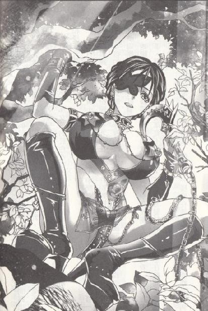

第36集·童颜杀手
临安篇（5/10）
出版日期：2012-07-12
【本集内容简介】
回合一：鲁智深与林冲联手逼退诚组，相携而逃！
回合二：大孚灵鹫寺与叵密静善为佛法而僵持不下！
回合三：秦桧对上西门庆，惊魔指怒挑天魔伞！
回合四：七方势力大混战，地底下却杀出一个来历不明的童颜巨乳女杀手？
一片混乱之中，黑魔海的神秘女子乍现，西门庆亦诡招尽出，鲁智深衣钵脱落，程宗扬却看懂上面用来寻找转世灵童的袈裟文字……
※ ※ ※ ※ ※
封面人物：小玲儿
插图：阮香琳

插图：小玲儿
阳光透过枝叶，斑斑驳驳地洒在身上，空气仿佛凝滞了一样，没有一丝微风。虽然是仲春天气，董超与薛霸却走得汗流浃背，两人只拽了根哨棒，行李、包裹都挂在林冲的木枷上。
“贼厮鸟！”薛霸恶狠狠道：“莫若就在此地结果了他！也少走后面几千里的路。”
“噤声！”董超压低声音道：“昨晚你施计策拿开水给他烫脚，这厮的眉毛也不挑一下，滚开的水烫上去，脚背不见半点红！你还瞧不出林教头这一身的好功夫？”
薛霸急道：“老董！咱们拿了钱的！你若是打退堂鼓，太尉府那钱可是好白拿的？”
“偏是你急！”董超拉着薛霸又堕后几步，远远瞧着林冲的背影道：“这厮功夫扎手，等闲制不住他。若是用强，怕是坏了我二人的性命。”
薛霸悄声道：“依你之见？”
董超从袖中摸出一根竹管，然后拿出腰间的水囊，拔开塞子，把竹管的蜡封揭开，将里面的粉末倒进去。
“这是我花了一个银铢才买来的。饶是大罗金仙，只要吃下去，一时三刻也要筋酥骨软……”
忽然旁边“呼喇”一声，把两人唬了一跳，仔细看时，却是一只野鸡从林间拍着翅膀飞出。
薛霸眼明手快，抄起哨棒将那只野鸡打下来。两人对视一眼，董超提着野鸡的两只翅膀朝前跑去，口中嚷道：“林教头好口福！这只野鸡半路撞出来，正好给教头打牙祭！”
林冲戴着重枷，头发髡过，脸上刚刺了青，比起当日的豪迈多了几分沧桑。他立定脚步，两手捧着枷，微微躬身，“不敢。”
董超从腰间解下水囊，一边笑道：“本该我们自己拿行李，偏生昨晚吃坏肚子，身上半点力气也无，偏劳教头了。辛苦辛苦！且来喝口水。”
林冲看着他把水囊递到木枷上，片刻后张开口，犹如长鲸吸水，一口气喝了大半。他的双手被铁镣锁着，递不到木枷上，无法抹嘴，只点了点头，说道：“谢了。”
董超堆起笑脸，“累了这一路，也该歇歇了。教头且坐，待小的杀了这只鸡，给教头尝鲜！”
林冲倚着一棵大树坐下，虎目四处一扫，只见周围的山林烟雾弥漫，古木森森，翻起的树根犹如怪蟒，透出一股险恶的气息，不禁问道：“这是何地？”
“野猪林。”董超道：“往江州去的必经之路。教头放心，这路我们兄弟都是走熟的，断不会有事。”
林冲道：“离江州还有多少路程？”
董超还没开口，薛霸便道：“好不晓事！刚出了临安，离江州还远着呢！”
林冲不再言语，背靠着大树闭目养神。
董超使一把牛耳尖刀利落地给野鸡放血，一边向薛霸使眼色。两人是做惯活的，薛霸心下会意，一边做出小解的样子，把腰间的铁索抖得哗哗作响，一边骂骂咧咧往树后走去。
到了树后，他瞧准林冲的位置，猛地抖手一挥，铁索绕过大树，“哗啦”一声绷紧，将林冲当胸捆在树上。
铁索捆在身上，林冲却没有挣扎，只像是没了力气一样，缓缓睁开眼睛。
董超将野鸡一抛，一边提着滴血的尖刀过来，一边道：“林教头，你不合得罪了不该得罪的人，我们兄弟也是奉命行事。”
林冲脸上的肌肉微微抽动了一下，沉声道：“是谁要取林某的性命？”
“还能有谁？”薛霸将铁索钉在树后，提着腰刀过来，抖着一脸横肉说道：“要怪就怪你娶了个花枝般的娘子，惹得太尉府的小衙内动心。你若不死，小衙内怎好与你家娘子双宿双飞？”
董超道：“教头莫听他胡说，今日之事，与你家娘子无关，教头只需安心上路，往后一年两祭少不了教头的酒水。”
“天堂有路你不走，地狱无门偏进来！”薛霸挽起袖子狞笑道：“姓林的！明年今日，便是你的祭日！”
林冲腮帮绷紧，盯着两人手中的刀，虎目中流露出一丝不甘和激愤，一字一字地说道：“我家娘子现在何处？”
董超道：“林教头，你今生夫妻缘份已尽，还管得了许多？”
薛霸喝道：“少跟这厮废话！早些了账便是！”
两人并肩上前要结果林冲的性命，这时头顶忽然传来一声炸雷似的大吼：“贼厮鸟！且吃洒家一杖！”
一个穿着僧袍的大汉从树上跃下，一路“噼啪”连响，胖大的身体仿佛一口铜钟，撞得枝叶纷飞。
两名官差愕然抬头，便见鲁智深带着一股劲风直扑下来。大和尚暴喝声中，一杖将薛霸的右手连刀拍进土中。薛霸只发出半声惨叫，整只右手便被鸡蛋粗的杖身砸成肉泥，鲜血四溅，顿时昏了过去。
董超眼珠滴溜溜一转，欲待逃走又心下不甘，握住尖刀朝林冲的心窝猛刺过去，却见林冲长吸一口气，接着“噗”的一口，喷出一条水柱，却是将方才喝下的半囊水尽数喷出，正中董超脸上。
董超只觉面门像被人重重擂了一拳，眼前一黑，向后倒去。
鲁智深挥起禅杖，便要了结两人的性命，却听得“铛啷”一声，禅杖被一条铁镣缠住。
林冲双手拽着铁镣，挡住鲁智深的禅杖，摇头道：“杀不得。”
鲁智深“嘿”了一声，摇了摇光秃秃的大脑壳，“偏你是个善心人。”
说着，鲁智深顾不上理睬两名官差，一把将禅杖扎在地上，两手扳着林冲的木枷就要掰碎。
林冲闪身避开，“开不得。”
鲁智深道：“林师弟！洒家赶来救你，你这是何道理？”
林冲道：“拙荆尚在临安，小弟……”他咬了咬牙，腮帮肌肉鼓起，“小弟刺配江州，尚有回乡之时，若是杀官逃亡……”
不等林冲说完，鲁智深便哇哇叫道：“哎呀！林师弟！你就是放不下你那处宅子、那点产业！已经到了这步田地，还想着回临安！你被刺配江州，阿嫂也不见踪影，便是回临安又有何用？”
林冲劈手抓住鲁智深的僧衣，叫道：“不见踪影！”
鲁智深自知失言，又无法改口，被林冲连声追问，只好搔了搔光亮的头皮，说道：“洒家听说你被下狱便赶到林宅，屋里已经不见半个人，问遍街坊邻居，都说不知。”
林冲的双手微微发抖，忽然目光一闪，大喝一声，抡起铁镣。
鲁智深也同时反应过来，展臂抓住禅杖，身上僧袍鼓起。
随着弓弦的震响，几点乌光从林叶间飞出，一半被林冲挥舞铁镣格开，另一半则飞向鲁智深。带着锯齿的箭头如毒牙般穿透僧袍，在衣内发出金石碰撞的声音，像射在铁块上一样弹开。
鲁智深拔出禅杖，迈开大步，就像一头犀牛般冲进密林，草鞋在地上留下一串数寸深浅的脚印。
林冲叫道：“是皇城司！小心他们的铁网！”话音未落，便看到一顶大网从天而降，如乌云般罩在鲁智深头顶。
这铁网是皇城司惯用的捕具，可攻可守，但有心戒备时，并不难防。林冲闪身退到树侧，一边抬脚将昏倒的董超和薛霸两人踢到树丛深处，免得在搏杀中误伤。
林冲犹豫了一下，终究没有震碎贴着封条的木枷，挽着铁链朝遇袭的鲁智深跃去。
那张铁网是用蚕丝混着铜丝织成，就算是一头犀牛也会被困住。鲁智深禅杖被铁网缠住，一时无法挣开，接着几条人影从树上飘下，两人对付鲁智深，另外四人则围向林冲。
正在疾掠的林冲脚下一沉，像钉子一般凝住身形，捧枷望着来人道：“赵大夫可是来取林冲的性命？”
为首一名汉子抬起手止住同伴，然后道：“林教头，我赵奉安敬你是一条好汉，你若答应，我便让你自尽，留一条全尸。”
说着赵奉安一扬手，将一柄腰刀掷到林冲面前。
林冲盯着刀锋看了片刻，摇了摇头，“林某死不足惜，但一死之下，‘畏罪自尽’这四个字，今生再无法洗脱，只怕连累家人。”
旁边一名戴着禁军腰牌的汉子冷笑道：“林教头好生伉俪情深，都死到临头还放不下自家娘子。可惜尊夫人已进了太尉府，皇城司就是千肯万肯，也动不了高太尉一根汗毛。”
赵奉安带的诚组一共有六人，三人来自皇城司，其余分别是从兵部和刑部抽调来的好手。说话的江逢岩也是禁军武官，平日与林冲多有不合，眼看他虎落平阳，心头的快意哪里还按捺得住，开口便是一番奚落。
听江逢岩说得刻薄，赵泰安暗叫不好，耸身准备去抢回腰刀，却听到背后一喝，那张铁网轰然破碎，像被巨兽撕开般寸寸断开。
鲁智深僧衣扯下半幅，露出一侧粗壮的肩膀和肌肉虬结的胸膛。他一手握着禅杖，赤裸的胸膛上挂着一串佛珠，身上连绵不绝的百花刺青暗金浮动，犹如一尊怒目金刚。
两名皇城司的属下同时举刀向鲁智深劈去，刀锋及体，立刻被他的金钟罩震开。
鲁智深抡起月牙铲，横手一挥，将一名皇城司属下拦腰截断。血雨纷飞间，鲁智深拔步冲来，刚才说话的禁军武官往腕背上一拍，从袖中弹出一道淡金色的小符，反手抹在刀锋上。
林冲叫道：“小心！是乾贞道的焚金符！专破护体真气！”
符箓如烟氤般融入刀身，刀锋闪起一点锐金的光泽，江逢岩沉肩侧腕，腰刀由下而上，直挑鲁智深腰腹。与此同时，两枚弩矢从头顶飞下，弩矢的锋芒上，也闪烁着同样的光泽。
在长刀和弩箭的威胁下，鲁智深庞大的躯体显现出惊人的柔韧性。他腰身一折，就像一头巨熊突然间做出体操的动作，以不可思议的灵巧接连避开两支弩矢，接着鼻尖紧贴着江逢岩的刀锋滑到他臂间，然后雄躯一展，挺身重重地撞在他胸口。
江逢岩只觉眼前一花，臂间忽然多了一个龙精虎猛、遍体刺青的半裸和尚，然后整个人腾空飞起，右侧一排肋骨齐齐折断，跌倒在地，再爬不起身。
赵奉安向后跃了一步，眼锋犀利如刀，“好一个花和尚！好俊的身手！”
鲁智深一手提着禅杖，一手拍着胸膛的花纹叫道：“鸟官差！看清楚了！杀官的是洒家！莫要栽到我林师弟头上！”
赵奉安道：“林教头，得罪了。”
林冲道：“赵大夫，当日之事，林某从未吐露半字，如今林某已是阶下囚徒，何必赶尽杀绝？”
赵奉安道：“若你在大宋境内，我皇城司势必保你周全，可高太尉将你刺配江州，要怪就怪你的命不好吧！”说着他吩咐手下，“你们送林教头上路，我来会会花和尚。”
皇城司出动的诚组一共有六人，赵奉安仍觉得不放心，私下又从禁军邀了两名神射手，专在暗处伏击，谁知一照面便在鲁智深手下折了两人。眼见这花和尚不好惹，听到赵奉安的命令，其余三人都松了口气，放开鲁智深，持刀向林冲杀去。
赵奉安从腰间解下一串黑黝黝的铁器，抬手一抖，却是一根精钢打制的蜈蚣鞭。鞭身布满倒钩，鞭尾带着一个四面分叉的蝎钩，寒光森然。
“花和尚，你杀官劫囚，已经犯下死罪！”
“洒家行得端！走得正！”鲁智深豪气干云地喝道：“你们这班鸟官差，早就该死！便是洒家开了杀戒，佛祖面前也自见分晓！来来来！让你尝尝洒家的禅杖！”
赵奉安一抖钢鞭，迎向鲁智深。他身为武功大夫、带御器械，是皇城司有数的高手，一条蜈蚣鞭刚柔并济，一时间与鲁智深斗得难解难分。
林冲双足微分，牢牢立定，身体却如暴风中的长草，随风偃伏，在三人的夹攻下左闪右避，不时用铁镣木枷封格三人的攻势。那三人也是皇城司的好手，数招一过，立即找出林冲的破绽，当即便有人挥刀朝林冲小腿削来。
林冲脚一翻，踏住刀身，然后用木枷在对方腕上一磕，趁对方吃痛松手，侧肩将他送出，被铁镣锁住的双手同时往对方的腰背一搭，力透经脉，封住穴道。
见同伴远远飞出，另两人不禁心生怯意：林冲披枷戴锁还有如此手段，只怕赵大夫才能制得住他。
赵奉安的蜈蚣鞭神出鬼没，舞动间将鲁智深一身僧袍撕扯得千疮百孔，但他心底没有半点轻松。面前的花和尚一身金钟罩修为深厚，鞭上锋锐无比的钩爪缠在他手臂上，竟然发出如金属摩擦般的声音，无法刺入分毫。
鲁智深的金钟罩不惧刀斧，况且一件破僧袍值不了几个钱，手中禅杖大开大阖，没有半点顾忌。赵奉安几次抽打都被鲁智深用金钟罩强行震开，渐渐落了下风。
赵奉安一边守紧门户，一边盯着鲁智深的招数，忽然手腕一挺，蜈蚣鞭笔直飞出，鞭尾的蝎钩挑向鲁智深腰间，落处不是他的熊腰，而是他腰间一只灰扑扑的旧布袋。
果然，连劲弩射中都只当苍蝇乱飞的鲁智深竟然扭身避开蜈蚣鞭，显然对旧布袋十分看中。
赵奉安一招探出底细，顿时像一条蛰伏的毒蛇猛然露出毒牙，身体突然间动了起来。他左手一弹，数张寸许长的小符齐齐飞出，接着右手的蜈蚣鞭从飘飞的符箓间穿过，在鞭身扭动间，将那些小符一溜挂在鞭上。
淡金色的焚金符，专破护体真气；赤红色的离火符，让兵刃短时间内出现骇人的高温；苍黑色的重岩符，使兵刃击出时重量剧增；白色的迷仙符，发动时兵器仿佛化为烟雾，无法辨识，同时屏蔽出手时的所有踪迹和声音……更重要的是其中还有一张金紫色的分身符。
赵奉安的蜈蚣鞭刹那间化为三条，每一条都附加有符箓的效果。
这些符箓每一张都不便宜，加起来足够让花和尚痛痛快快吃两年狗肉，不少还是有价无市的珍品。若非赵奉安出自乾贞道门下，这些符箓大多是他花费数年时间自己做的，就是有钱也买不到。
此时符箓效果全开，那条蜈蚣鞭先是七彩绽放，每一种光泽都代表不同的效果，然后一分为三，接着化为一团滚滚白雾，速度奇快却毫无声息，一瞬间就将鲁智深庞大的身形整个吞没。
白雾鼓荡间，溅起点点血花，鲁智深的怒吼声像从水底传来，又沉又闷，模糊不清。
一直在夹攻中没有还手的林冲长啸一声，一手抓住木枷使力一扯，木枷应手破碎，折断的枷面像利斧一样砍在旁边一人小腿上，将那人砍得栽倒在地。接着他一把握住身前的腰刀，斜身飞起。
林冲犹如一条挣脱枷锁的蛟龙掠向赵奉安，人未至，刀锋已经撕开空气，劈向赵奉安的头颅。
赵奉安发出一声鸟啼，一直埋伏在树上的两名神射手连放数箭，都被林冲避过，接着树梢乌云一卷，一张铁网兜头洒下，裹向林冲。
赵奉安摇头冷笑，一边祭出一张小符，准备了结鲁智深的性命，夺下他腰间的包裹。符箓还未祭出，赵奉安突然瞪大眼睛，神情古怪地朝自己腹下看去。
一根黝黑的禅杖从白雾间伸出，锋利的月牙深深勒入赵奉安腰间，只差一线便将这位武功大夫齐腰斩断。
浓雾不知何时散去，丝丝缕缕绕在禅杖上，露出一只筋骨如铁的大手。
鲁智深狠狠唾了一口，“鸟官差！当初那厮用的符洒家看得仔细！以为洒家没有半点戒心？一只野鸡溅出的血便骗了你去，让洒家笑掉大牙！”
赵奉安口中溢出血来，接着身体一轻，腰椎被月牙铲截断，断裂的上身扑倒在地，不停抽搐。
鲁智深一点都没有身为出家人的觉悟，扯开赵奉安的衣袖，把里面剩的符箓都拿过来，不管三七二十一先塞到口袋里，一边摸着光秃秃的脑壳哈哈大笑。
林冲的身体在铁网上一触，如狸猫般翻到网上，顺着网角的绳索掠入树叶间，接着便看到折断的枝叶纷纷堕下，鲜血如流水一般沿着树干流淌下来。
片刻后，林冲提着两颗头颅从树上跃下，先一刀将那名封住穴道的皇城司好手杀死，然后喝道：“师兄！一不做二不休！”说着朝后面两人杀去。
鲁智深哈哈笑道：“痛快！痛快！”他手脚麻利地把赵奉安带的物品洗劫一空，便随林冲追去。
童贯躲在一棵大树的树桠间，眼见着鲁、林二人大发神威，风卷残云般将诚组的八名好手一扫而空，直吓得两股战战，双手抱着树干，裆里湿漉漉一片。
忽然，一只手伸过来，熟络地在他肩上拍了拍，“哎哟，这不是童公公吗？怎么在这儿乘凉呢？”
童贯扭过脸，露出一个比哭还惨的笑容，“不……不关我的事……啊！你不是——程员外！”
程宗扬的脸黑了一下，自己这个员外的身份算是被官方认证了，想摘都摘不掉。
童贯又惊又喜，再怎么说程员外也是朝廷的官员，总不会和那些杀官的反贼勾结吧？有他帮忙，自己这条小命就多了三分指望……不！是七分！
童贯发现，树上还伏着两条野兽般的兽蛮武士，一个虎目金睛，一个豹头兽身。他们蜷身伏在枝上，眼中凶光毕露，一左一右护在程员外身侧，就像两名扈从。
在程员外身后还有一个花枝般的少女，她穿着一件墨绿衫子，怀里抱着一只精致的皮夹，俏生生地依着树干，宛如一株鲜花。
童贯的裤子都湿透了，趴在树上不敢稍动。他根基全无，耳力、目力只是常人的水准，远处的情形既看不清也听不清，只赔着笑附和道：“员外身手真好！这么高的树还坐这么稳，别说进士，就是武状元也手到擒来！”
程宗扬堆起笑容，“借童公公吉言。”
童贯忙道：“员外是官人，我一个小小的内侍，员外叫我小贯子就行。”
程宗扬笑道：“小贯子，你乖乖在这儿待着，我保你性命无忧。如果乱说乱动……哈哈！”
“小的明白！员外……”
童贯张口还想巴结，程宗扬竖起一根手指，“嘘——什么都别说，安心看着吧！今天这事儿，比我想的还热闹。”
童贯立即乖巧地闭上嘴巴。
程宗扬道：“师师，出现多少人了？”
李师师抱着皮夹道：“鲁、林、两名官差，皇城司九人，共十三人。两名官差不计，皇城司死六人，两人在逃，还有这一位。”说着她用下巴指了指童贯。
童贯心里一寒，感觉裤裆好像又湿了。
程宗扬挥挥手，“童公公是自己人。”
程宗扬的口气就像说件微不足道的小事一样轻松，劫后余生的童贯却觉得心里仿佛有一股暖洋洋的热流淌过，看着程员外的眼神就像看到亲人一样。
“皇城司已死的应该没有六人。”程宗扬道：“花和尚一开始撞倒的那个没有确实的死亡证据，老兽！”
树下传来一声低沉的咆哮，潜在下方的青面兽出声回应。
“去看看！”
青面兽立刻跃出，在方才双方交手的战场上搜索起来。
李师师回想了一下，确实没有死亡的证据，只听家主又道：“这种统计一定要谨慎，不然一点微小的疏漏，就可能导致分析的结果完全错误。”
青面兽的咆哮声远远传来，却是江逢岩勉强抬手放出一枚袖箭。他整排肋骨都已折断，身负重伤，青面兽扭头避开，接着一掌拍在他脑门上，回头道：“死了！”
李师师半是羞赧、半是钦佩地说道：“是，家主，师师明白了。”
看着小丫头敬佩的眼神，程宗扬心情大好。别的自己也许不在行，但论起判断死亡的准确度，世间恐怕没有多少人比得上自己。从花和尚现身到现在，自己的生死根明明只感受到五股死气嘛！
程宗扬将两柄腰刀挂在身后，然后道：“我和老兽进林子里看看。老术、老豹，你们在外面，小心别露了行迹。”
那柄所谓的“雷射宝刀”程宗扬一直没弄明白，为免误事，仍用的两把普通钢刀，看来“战场破烂王”这个头衔一时半会儿还摘不掉。
金兀术道：“吾省得！”
“童公公，还有师师，林子里到底是什么情形，我也说不准，你们两个先留在外面。”程宗扬扭头道：“老术，你把他们两个背上。”
金兀术梗着脖子道：“吾背那个娃娃！”
程宗扬讶道：“师师，你什么时候和老术结的仇？”
李师师也莫名其妙，“没有啊。”
豹子头道：“吾知道！吾辈兽族武士，只骑女人，从无让女人骑到身上！”
程宗扬明白过来，这算是兽蛮男人的骨气吧？可李师师修为平常，这几名兽蛮人在山林间仿佛回到家一样，来去如风，若不背着李师师，要不了几下就把她甩得没影儿了。
程宗扬正在头痛，只听李师师巧笑嫣然地说道：“豹子头，我打赌你背不动我。”
豹子头顿时大怒，“无知的人类！吾让你见识见识吾辈兽族武士的力量！上来啊！”
李师师看着他肩背上如刺猬般的鬃毛，摇头道：“我打赌你背不动我，再加上一张鞍——赌一只羊。”
豹子头快活地在树干上蹭着皮毛，“赌了！赌了！”
看着豹子头兴高采烈地背上一张大号马鞍，然后让李师师侧身坐在上面，得意非凡地在枝上跳跃，显示自己的力量，金兀术不禁深深为同胞的堕落而羞耻，摇头嘟囔道：“一只羊！一只羊……至少要两只啊！”
童贯战战兢兢地攀住金兀术的皮甲，李师师向程宗扬比了个手势，笑盈盈地伏在鞍上。两名兽蛮人一前一后地跃上树梢，轻捷得仿佛没有重量。
这个公关经理自己算是捞着了！程宗扬都有些羡慕她的轻松，但这事她一个小姑娘能做，自己若依样画葫芦，将青面兽当坐骑，就不仅仅是被人骂脸皮厚的事了。
青面兽也很生气，“吾比豹子头力气大！背到临安用不了半只羊！”
“行了老兽！”程宗扬没好气地说道：“你就别杀价了！给你们兽族武士留点体面吧！”
程宗扬一拉大氅，如蝙蝠般从树枝上滑下，然后足尖在另一棵大树的枝上一点，斜身掠起。几个起落，身影便消失在林间，只有几根树枝仍在颤抖。
※ ※ ※ ※ ※
林中光线昏暗，偶尔有一道阳光如丝线般从密密匝匝的枝叶间射入，映亮林间厚厚的落叶。那两名皇城司的好手见到同伴被杀，心知不敌，立刻放弃追杀，转身窜入密林。
两人慌不择路，进到林中才想起来分头逃走。其中一人绕到树后，然后飞身跃起，攀住一根树枝，接着“咄”的一声，从背心到胸口猛然一凉，被一柄腰刀牢牢钉在树上。
孙天羽是从刑部抽调到皇城司的，论修为也许比不上禁军和宫中的高手，但论起江湖伎俩，见过无数江洋大盗的孙天羽远比同伴丰富。
孙天羽一边狂奔，一边用刀背四处乱打，林中栖息的鸟雀、小兽被惊动起来，纷纷钻出巢穴，或飞或走。终于看到一头野猪从林中蹿出，孙天羽随即解下外衣兜在野猪身上，然后在它臀上浅浅刺了一刀。
野猪狂奔而出，孙天羽屏住呼吸，如泥鳅般钻到落叶下，转眼便不见痕迹。
片刻后，林冲的脚步声踏着落叶飞掠而过，接着是花和尚力道十足的大步狂奔过来。孙天羽没有作声，静静躲在落叶下，一边倾听周围的声音，一边脚下用力，在泥土中越钻越深。
过了一会儿，头顶响起一阵奇怪的声音，似乎有人在树上布置什么。孙天羽压下好奇心，静静等待逃生的机会。
一炷香工夫后，林冲的脚步声由远及近地传来，这次速度慢了很多，似乎在仔细搜索周围的痕迹。
孙天羽口中有些发苦。这个林教头一忍再忍，一旦不再忍耐就显露出狠辣的一面，下了狠心要斩尽杀绝，不留一个活口。
在皇城司的计划中，由指挥使赵奉安亲自带队，六名好手加上两名神射手，对付一个戴枷的林冲，必定是手到擒来，谁知道半路杀出一个花和尚！那和尚的金钟罩已经是大成的境地，修为起码有第六级通幽境的水准，要按死自己不比按死一只蚂蚁费力多少。
孙天羽飞快地转着念头，忽然头顶传来一阵风声，隐约飘来脂粉的香气。他停住下潜的动作，然后眯起眼睛从头顶的落叶缝隙间望去，却是一条女子的裙裾从树梢飘下，正掉在离他不远的位置。
孙天羽的目光慢慢上移，昏暗的树木中，浮现出一抹月光般的莹白。
树上不知何时多了一名女子。她被一条玉白的丝带反绑着，悬空吊在一根斜枝下，手足背在身后，弯转的身体仿佛一只圆环，在风中摇曳生姿。
她长发盘成江湖女子常见的低髻，用一角雪白的丝帕包住，颇有些英姿勃勃的侠气。然而此时，她眼上却蒙着一条黑纱，耳朵也被塞住，涂过胭脂的艳红唇瓣张开着，一边发出荡人心魄的娇喘声，一边在细如人指的树枝下微微晃动。
眼前这香艳的一幕却让孙天羽心头隐隐发寒，他屏住呼吸，用难以察觉的速度，一点一点向下潜去。
那妇人对外界的变化一无所觉，她的外衣被人剥去，罗裙也被扯落，只剩下贴身的亵衣。同时衣上所有的衣结、纽扣都被人解开，软软地搭在身上。随着呼吸，妇人上身的肚兜越来越松，浅粉色的丝物渐渐低垂下来，露出双峰间浑圆而雪白的曲线。
她下身的亵裤原本系着一条软罗带，这时也被解开，交叉搭在腰间。随着树枝晃动，罗带在她的纤腰上一坠一坠地松散开来，最后倏忽滑落，在空中翻转着飘到树下。
那少妇身子斜弯，松开的亵裤从她光洁的胴体滑下，露出一截雪白的腰肢。略带寒意的空气涌来，令少妇本能地夹紧大腿，发出一阵低呼，娇喘细细地说道：“衙内……别玩了……妾身下面又湿了……”
林冲提着带血的腰刀出现在树侧。他腕上被斩断的铁镣微微晃动着，瞳孔收紧，虽然没有动作，但紧绷的肌肉充满力度，就像一头随时可能扑出的猎豹。
那女子虽然蒙着眼，但玉颊熟悉的轮廓让他一眼认出，悬在树梢上的少妇正是自家娘子的亲姐、威远镖局总镖头的夫人，销魂玉带阮香琳。
“林教头，别来无恙？”
陆谦负着双手出现在树梢高处，微笑道：“放心，阮女侠的眼、耳都被封住，听不到半点声音，只以为在太尉府的后花园里，正与小衙内戏耍取乐。”
林冲沉声道：“陆谦，我与你相交多年，没想到你竟然是个趋炎附势的无耻小人！”
“趋炎附势？哈哈！”陆谦仰天长笑，油然道：“林兄，你难道就比我陆谦清高多少？在禁军你升不上去，皇城司一招手，你不就巴巴地去了？若非你命不好，犯了忌讳，有这样趋炎附势的机会，难道你会错过？”
“不错！”林冲挺胸道：“林某当教头多年，也想谋个一官半职！非为富贵，非为权柄，只为不负林某这一身修为！若能讨好高太尉，林某如何不做？但大丈夫建功立业，当从直中取，不向曲中求！你以妇孺威胁林冲，岂是大丈夫所为！”
陆谦充满讽刺地说道：“岳贼果然没看走眼，林教头真是豪杰盖世！我倒想想问问林教头，这位阮女侠与你家娘子是同胞姐妹，不知这身子比起你家娘子如何？”
说着陆谦脚下微微一震，那根树枝向下一弯，然后弹起，阮香琳身上的肚兜一松，从玉体上飘落下来，露出一对肥耸圆硕的雪乳，在胸前沉甸甸抖动着。
她腰间松开的亵裤也随之滑下，光洁而平坦的小腹以及丰腴的雪臀同时裸露出来。她双腿夹得正紧，亵裤垂在玉股下，能看到股缝间隐约的湿痕。
“衙内，妾身手脚都麻了……”
在阮香琳的娇呼中，陆谦坐在树枝上，用脚尖挑了挑她深红的乳头，“阮女侠好一朵鲜花，却插在李寅臣那泡牛粪上，当日小衙内一见就心生怜惜，千方百计和阮女侠成了好事……不瞒林兄说，阮女侠是个豪爽的性子，自从入了太尉府这座大庙，便以肉身逐一布施，不仅高衙内，连他几位结拜兄弟也各分一杯羹，尝遍了阮女侠身上的美味……”
陆谦踩住阮香琳的雪臀，笑道：“阮女侠是林兄的妻姐，想必时常见面，不知林兄见过阮女侠的屁股没有？阮女侠这屁股又白又嫩，活像一颗水蜜桃，当日各家的小衙内轮流骑过，一个个都说好。林兄可想试试？”
林冲脚下像生了根一样横刀而立，盯着陆谦的喉结，一言不发。
陆谦一笑，“林兄好耐性，多半是等花和尚吧？”他彬彬有礼地抬手说道：“时辰尚早，林兄尽管在这儿等。至于阮女侠……不瞒林兄说，来时路上蒙阮女侠垂爱，也让小弟得了些乐子。当然，阮女侠以为在下是那些衙内。林兄若是有意，不妨也学小弟浑水摸鱼一番，尝尝阮女侠的鲜味。”
林冲冷冷道：“你我相识多年，该知道林某不是一勇之夫，这般作为，只会让林某看扁了你。”
陆谦大笑道：“林兄未免把自己看得太重！实言相告，被你看扁，不损陆某分毫！”
林冲打断他，“狙击鲁师兄的是谁？禁军还是高太尉请的杀手？”
“都不是，林兄尽管琢磨。”陆谦笑眯眯道：“林兄不信我占过你妻姐的便宜？你信不信我知道嫂夫人下面有一颗痣呢？”
林冲勃然变色。
程宗扬盘腿坐在树上，摸着下巴嘀咕道：“下面有痣？我怎么不知道？”
青面兽伏在他身旁，背后负着一杆长枪，已经装上枪头，为了避免金属反光，外面包上了黑布套。他微微抽动鼻翼，嗅着风中的味道。
陆谦长笑道：“林兄好不晓事，陆某既然能把阮女侠带出来，这会儿陪小衙内的该是哪位，林兄不妨猜猜？”
陆谦越说越露骨，“小弟向小衙内辞行的时候，嫂子正好也在，正跪在小衙内身前，含住小衙内撒尿那话儿仔细品尝。哎呀，忘了跟林兄说，嫂子那会儿还光着身子，等把小衙内舔硬了，嫂子就和勾栏的粉头一样，撅着屁股让小衙内骑上去快活。见了我，嫂子还红了脸，叫我‘陆叔叔’……”
见林冲不动声色，陆谦阴阴一笑，俯身抓住阮香琳的臀肉，“林兄可知道小衙内当时用的是你家娘子哪处妙物？看仔细了！就是此处！”
陆谦抓住阮香琳的臀肉往两边一分，露出的并非柔艳的肛洞，却是一支寸许粗的黄铜管，直挺挺插在少妇如雪的臀肉间。
小巧的肉孔被撑得浑圆，里面不知抹了什么液体，湿溚溚地沾在铜管和臀肉间，能看到红艳的肛肉在铜管上微微抽动。
陆谦得意洋洋地说道：“小衙内就是当着小弟的面，把他那话儿硬顶到嫂子的屁眼儿里，一边去摸嫂子的阴门，就像这样！”
林冲不是鲁莽之人，陆谦修为不及自己却敢孤身在此设伏，又牢牢占据上方，三番两次引诱自己出手，必有后招。鲁智深音讯全无，必是被人缠住，眼下最好的选择应该是扭头便走，先与鲁师兄联手，以免被各个击破。
因此无论陆谦怎么挑衅，林冲都沉心静气，观察陆谦的破绽，准备有机会便先救下阮香琳，否则回头再战。
但陆谦把言语扯到自家娘子身上，林冲如何还按捺得住？他刚说了一半，林冲拔身而起，腰刀如匹练般朝他攻去。
眼看林冲挽着腰刀腾身而起，陆谦手指忽然一紧，抓住阮香琳的臀肉用力一分，插在少妇肛中的黄铜管突然弹开，一蓬牛毛细针如雨点般朝林冲袭去。
陆谦隐藏有后手，林冲早有警觉，但万万想不到他如此卑鄙，竟然把机关设在阮香琳身上。
陆谦对林冲的身手知根知底，千思万虑才使出此招，时机、方位都选得极准。林冲身在半空，闪身避让已不可能，扯衣挥打又来不及，只能将蓄势待发的一招尽数施展出来。
暴喝声中，林冲长刀疾劈，一股强大的劲气将袭来的细针半数扫飞，另外半数却密密麻麻地钉在臂上。
林冲一刀使出，已经力尽，陆谦正等着这个机会，单刀如闪电般劈出，重重斩在林冲刀锷上，将他的腰刀劈得脱手飞开。
陆谦一招得手，立即从枝上俯身掠下，腰刀再度斩出。林冲距离地面不过丈许，跌下去只是一眨眼的工夫，但这段时间足够陆谦劈中他三刀。
林冲嵌满细针的双臂忽然一伸，右手从陆谦的腕下绞过，避开他的刀锋，以臂对臂地与他硬拼一记。
陆谦脸色剧变，左手向后一挥，攀住树枝，折回枝上。他整条右臂的衣袖像被狼牙棒扫过般变得稀烂，臂上鲜血淋漓。那些牛毛细针虽然射中林冲，却没有刺透他的皮肤，这时交臂一击，反而让自己中了计。
“金钟罩！”陆谦咬牙道：“你练了金钟罩！”
林冲缓缓收回手臂，冷冷道：“初学乍练，不值一提！但只要比你陆谦硬上一分便足够了。”
陆谦的脸色由白转青，林冲刚开始习练金钟罩，远不到身如金石的地步，但已经比自己的肉身要强横许多。陆谦原本居高临下，又有阮香琳这个人质在手，林冲即便强攻，至少也要百招开外才能分出胜负。问题是他只怕林冲不死，在那些细针上都喂了剧毒。眼下作茧自缚，陆谦手里虽然有解药，但也要林冲肯给自己时间服用。
陆谦心念数转，一边盯着林冲，一边忽然伸手，一把抓住阮香琳的亵裤强行扯落。
阮香琳惊叫一声，光溜溜的身子在空中打了个转，玉体优美的曲线尽数显露出来。
亵裤一被扯下，她身上一丝不挂，成熟而白美的胴体弯转如环，在昏暗的光线下宛如一弯悬在树梢下的月钩，散发出艳丽而淫靡的肤光。
林冲一击得手正要追杀，却见陆谦面露狰狞，抬手一刀向阮香琳捅去。他大喝一声：“住手！”一边硬生生地停住脚步。
陆谦单刀从阮香琳背后捅下，眼看就要血染玉体，忽然刀锋一沉，单刀不差毫厘的从她腿缝儿间穿过，停在她的股间，刀背紧贴着美妇下体柔软的蜜肉。阮香琳下身春潮涌动，白生生的大腿间湿淋淋满是淫水，又滑又腻。被冰凉的刀锋一激，她的身子情不自禁地颤抖了一下，一边娇声笑道：“小衙内……轻着些呢……”
林冲心中有数，自己这位妻姐修为虽然算不得一流，但不是一个陆谦能随意摆布的弱质女子。她行走江湖多年，一般的塞耳、蒙眼对付一个寻常妇人也许足够，但对销魂玉带没有多少效果。陆谦多半是用了什么法门，封闭了她眼、耳的识觉，甚至连身体的触觉也被改变，以至于刀锋及体仍茫然无知，只以为是高衙内与她耍弄。
陆谦手臂的血迹一点一点变得发黑，他嘶声道：“姓林的！我倒小瞧了你！明白告诉你，拦截花和尚的是大孚灵鹫寺的秃驴！你现在去救还来得及！若是不然，我这便杀了她！让你鸡飞蛋打一场空！”
陆谦单刀一提，刀背嵌进美妇股间的肉缝儿，将柔嫩的蜜肉挤得绽开。阮香琳下身颤抖几下，紧贴着刀背的蜜穴涌出一股淫水，顺着雪亮的刀身淋淋漓漓地洒落下来。
阮香琳已经落在陆谦手中，如果强攻，只凭自己一人难保她性命无忧，再周旋下去也难以讨好。林冲当机立断，慢慢向后退去，然后脚下一弹，如箭矢般飞入密林。
陆谦“哇”地吐了口血，脸上蒙了一层黑气。他将单刀一抛，颤抖着双手扒开阮香琳的臀肉，拽出那根铜管，然后战栗着手指插到她肛中，竭力掏摸起来。
柔红的屁眼儿在他指下不住变形，阮香琳白生生的屁股扭动着，喉中不断发出销魂的媚声，一双雪乳来回抖动，悬在枝下的玉体愈发妖艳。
陆谦却没有半点销魂的表情，额头不断滚出黄豆大的汗滴，连汗滴都仿佛蒙上了一层黑色。
一个声音好奇地问道：“找什么呢？”
陆谦头也不回地说道：“解药！”接着他才反应过来，骇然回头。
程宗扬恍然大悟，“陆虞侯，你真有创意啊，把解药放在那个地方，怎么想出来的？”
程宗扬似乎没有看到陆谦惊骇的表情，兴致勃勃地说道：“我知道了！陆虞候原本打的主意是用这些毒针暗算林教头，然后告诉他，解药在阮女侠的屁股里，看他找还是不找，以此取乐吧？啧啧，陆虞侯的心思够毒！可惜机关算尽，到头来反而害了自己。”
陆谦势如疯魔，一拳向程宗扬打去。程宗扬笑了笑，任由他一拳打到脸上，连眉毛都没有动一下。
“陆虞侯，你中毒这么深，剩的力气连一成都没有，还妄用真气，是不是嫌死得太慢啊？”
陆谦身上的力气耗尽，再没有动手的胆量，喘着气道：“放……放过我……我什么都做……”
程宗扬笑眯眯道：“我要你做的事很简单，就是什么都别做，安安分分地待着——等死。”
“饶我一命……我什么都给你……”
“陆虞侯，你搞错了吧？”程宗扬对这个狗腿子没有半点好感，哈哈笑道：“你这会儿真没什么能给我的。”
“我是太尉府的人！”陆谦急切地说道：“我告诉你一个天大的秘密！我从来没对人说过的秘密！”
程宗扬的手指暗暗收紧，脸上带着满不在乎的神情，“什么秘密？”
“屠龙刀！屠龙刀在高太尉手里！”
高智商这个大白痴，真是坑爹啊！程宗扬杀心立涌，口中却大笑道：“这算什么秘密？岳贼受死，是高太尉带人抄的家，私藏一把破刀算得了什么？陆虞侯想保命，至少要有点诚意吧？”
陆谦脸上的黑气越来越浓，舌头不由自主地从口中滑出，连舌苔都变成紫黑色，哑着嗓子道：“救我……我把黑魔海的机密都告诉你……”
程宗扬一震，“黑魔海！”
陆谦拼命点头，“我是黑魔海的人，我能告诉你很多事……我们劫了一个、一个人……她身上有一个很大很大的秘密，关乎宋国存亡的秘密……”
“等等！”程宗扬心头狂跳，意识到即将听到的秘密震撼性只怕不亚于高俅的真实身份，但在他心里还有一件事比这桩秘密更重要。
他盯着陆谦的眼睛道：“先告诉我剑玉姬的来历！她是怎么从岳鹏举手下逃生的？”
“好、好！”陆谦拼命说道：“剑玉姬是外堂的主导，黑……黑魔海的扩张都……都是由她一手布置……”
陆谦的话语越来越迟钝，忽然嘴角抽动了一下，满嘴的口水控制不住地流淌出来，舌头吐出半截，木然垂下。
“干！”
程宗扬一把抓住悬吊阮香琳的玉带，将她拖到树上，一手伸到她臀间，手指插进她的肛洞。
阮香琳的臀肉丰满滑嫩，屁眼儿软软的，像肉箍般又软又腻，手指伸到尽头，能感觉指尖触到一个硬硬的物体在她体内滑动，想掏出来却没那么容易。
程宗扬费力地在阮香琳肛中掏弄，被封闭知觉的阮香琳只以为自己正在被小衙内肛奸，迎合地来回扭动屁股。
眼前雪肤花谷、媚态横生、妖艳异常，程宗扬这会儿却没有半点心思，只求她能安分点，屁股别再乱扭。
忽然太阳穴像被针扎到般一痛，程宗扬沉着脸停下手指。那股死气离自己近在咫尺，冲击分外强烈，甚至能感受到死者毙命前浓浓的恐惧、不甘和怨毒。
程宗扬一手按着太阳穴，等着这股死亡气息被生死根吸收殆尽，胸口烦闷欲呕的感觉渐渐消失。他扭过头，旁边的陆谦整张脸都黑了，软绵绵地靠在树上，脸上带着一丝古怪的笑容，已经没了气息。
死狗！你用这么厉害的毒干嘛？老子想救你都来不及！程宗扬心里暗骂着拔出手指，在美妇的臀肉上抹了抹。
阮香琳伏在他膝上，玉体像蛇一样扭动着，丰满的雪臀左摇右摆，似乎在寻找他的手指，娇声道：“衙内……妾身下面好空……”
程宗扬看了她片刻，捡起挂在枝上的亵裤碎片塞住她的嘴巴，然后把她拦腰抱起，罩在自己的大氅内，拉上拉链。
少妇白艳的肤光被大氅遮没，林中又恢复了幽暗。
远处的松林间，金兀术野兽般的躯体仿佛一头矫健的猎豹，蜷伏在松枝上，金色的瞳孔收拢成一条细线。童贯紧紧攀着他的皮甲，一张小脸骇得面无人色。李师师侧身坐在豹子头背上，悄悄屏住呼吸，看着一行僧人从林间穿过。
※ ※ ※ ※ ※
“我佛慈悲……”
“我佛慈悲。”
“我佛慈悲！”
鲁智深立定脚步，他的僧衣垂下半幅，破破烂烂地掖在腰间，赤裸的上身仿佛镀金的铁塔，皮肤上纹着连绵不断的花朵刺青。
随着几声佛号，十余名穿着白色僧衣的和尚陆续从林间现身。他们声音或高或低、或紧或慢地宣了佛号，然后抬起右手，郑重其事地在胸前画出一个“卍”字符。
鲁智深脸上露出既恼怒又无奈的神情，指着那些和尚道：“你们这些……哇呀呀，气死洒家了！”
为首的净念一丝不苟地画完卍字符最后一笔，然后抬起头，“花和尚，世间万事有果有因，你纵然能化身芥子藏于大千世界，又如何能逃过因果？”
鲁智深扛着禅杖道：“罢罢罢罢！你们一说这些，洒家便头痛难耐。净念和尚，师父当年传我衣钵，你也在场，着实是师父亲手将衣钵传于洒家，为何时至今日还苦追不休？”
净念道：“衣钵原是二世大师的故物。”
鲁智深虎目一瞪，“师父亲手交予洒家！哪个敢说不是！”
“智深师兄所得，确是前任方丈智真大师相授，但那些衣钵原本是一世大师所遗，智真大师也仅是保管而已。如今二世大师已在寺中坐床，即便智真大师尚在，衣钵也该交予二世大师。”
鲁智深哼了一声，“沮渠师兄想要师父的衣钵，自该亲自向洒家来讨，让你们来算什么？”
“阿弥陀佛。”净念道：“二世大师乃是不拾大师转世，身份尊贵，我等匡护圣教，为大师奔走，自是理所应当。”
鲁智深拍了拍腰间，豪气干云地说道：“衣钵便在此！只凭你们，洒家却不肯给！”
“善哉善哉。”净念道：“佛曰：‘汝不可贪图他人财物’，鲁师兄此举，却是犯了贪戒。”
鲁智深托着禅杖大步迈出，边走边道：“洒家还有事做！想与洒家说佛法，待改日洒家洗洗耳朵再来听吧。”
净念身形一闪，挡在鲁智深身前，神情坚定地说道：“鲁师兄，西方极乐世界已近，你该忏悔了！”
鲁智深恼怒地瞪着他，忽然哈哈大笑，“你们这些秃驴！说来说去还是要动手，却与洒家嚼了半天的舌头！”
旁边一名和尚按捺不住，喝道：“花和尚！你敢污辱我佛门子弟，小心要下拔舌地狱！”
“恁多废话！”鲁智深禅杖横扫，满地落叶被狂飙卷起，扑向诸僧。
诸僧齐声梵唱，净念弹指在胸前画了一个卍字符，长声道：“佛祖圣灵！圣光禅掌！”
净念一掌拍出，远处落叶汇成的狂飙在他身前三尺的位置仿佛撞上一道无法逾越的长堤，无数落叶轰然破碎。
鲁智深退了半步，粗犷的面孔闪过一抹血红，哈哈笑道：“好个圣光禅掌！净念小和尚，数年不见，你的修为竟然已经进入了第六级通幽境！洒家倒是小看你了！”
一个僧人喝道：“净念大师乃是十方丛林新晋的红衣大德！只是大师为人谦逊，才以白袈裟示人！”
“红衣大德！了不起啊！”鲁智深道：“不过想胜过洒家，只怕也不容易！来来来！再试洒家这一杖！”
净念却合什道：“阿弥陀佛，出家人心怀嗔念已是不该，何况好勇斗狠？但师兄既然不肯归还衣钵，贫僧只好强行讨要。”说着他抬起头，“贫僧与鲁师兄这场比拼乃不得已为之，只分胜负，不决生死。”
鲁智深“嘿”了一声，“你比洒家还小几岁，怎如此迂腐？若都是点到为止，打起来缚手缚脚，不痛快不说，即便打到天明也未必能分出胜负，且放开手脚来打！”
“自然不会与师兄打到明日。”净念神情坚定地说道：“贫僧与鲁师兄以招数定胜负。”
鲁智深挠了挠脑袋，“几招？”
净念抬起右手，然后屈起拇指，眼中流露出无比的信心，“四招！”
鲁智深一愕，接着爆发出一阵大笑，“洒家离寺多年，倒让人看扁了！便是沮渠师兄也不敢说此大话！净念小和尚，洒家二十四路伏魔杖法，用零头便能把你拍得扁扁的！”
净念一拂衣袖，“鲁师兄，请！”
鲁智深也不废话，喝道：“且看洒家第一招！天地玄黄！”
暴喝声中，鲁智深那根镔铁禅杖在头顶一旋，搅动起两道截然不同的气流，接着“轰”的一声，一道影子脱杖而出，如怒龙般劈向净念。
净念张开双臂，抬掌道：“以佛祖之名——合！”
净念双掌一合，宽大的僧袖鼓荡起来，犹如两面白帆蓦然张开。周围的林木被他的掌力吸引，十余株大树同时向内弯曲，枝叶簌簌飞落，仿佛都在向他这一掌俯首。
鲁智深奔腾的杖影落入净念掌中，随即湮灭无形，甚至连他的衣角都没有荡起分毫。
“好！”鲁智深大笑道：“净念小和尚，你的圣光禅掌不过八九分火候，这招天地合的修为却超过十成！该不会是这么多年，就只练了这一招吧！”
“阿弥陀佛。圣光禅掌乃是本寺一世大师穷尽二十年心血创出的绝学，神威无俦，贫僧所修不过皮毛。”
“少来吹牛！”鲁智深喝道：“看洒家的第二招！”
鲁智深禅杖斜举，喝道：“日——”
杖身轻震，圆形的日轮微微一沉，轮面绽放出如骄阳般的耀目光华。
“月——”
禅杖另一端的月牙逸出一道月钩般的影子。
鲁智深将禅杖横放胸前，脸膛的虬髯如刺猬般鼓胀起来，接着舌绽春雷：“轮——”
禅杖两端的日轮与月影同时升起，光芒刺得人连眼睛都睁不开。
“回！”
空中传来奔雷般的震响，仿佛两轮日月同时在大地间碾过，带着无边威势袭向净念。整座野猪林仿佛被无形的力量压迫，树木的枝干都向下弯曲，山林间弥漫的浓雾也为之下沉。
强大的声势令群僧为之色变，谁也没想到鲁智深竟然能修成十方丛林的无上杖法。
伏魔杖法名列十方丛林绝学之一，以伏魔为名，伏的并非邪魔，而是心魔。若心魔不除，修为再深也难练成此杖，因此修成伏魔杖法的无不是佛法精湛的高僧大德。鲁智深明明是个好酒好肉、口无遮拦、不守戒律的花和尚，如何能修成伏魔杖法？
惊愕归惊愕，鲁智深施展的伏魔杖法却并非幻觉。不少僧人色变之余，情不自禁地抬手出掌，试图合众人之力抵挡他这记声威赫赫的日月轮回。
净念双掌轻合，念诵道：“神圣归于佛祖，光荣属于一世大师，愿佛祖的圣光照耀众生——”他双目一张，“圣光禅掌！神圣启示！”
一点光芒从净念的掌中逸出，旋转着迅速变大，仔细看时，却是一个不住转动的“卍”字符，散发出圣洁的白光。
净念一掌拍出，神圣的符文扑向伏魔杖法的日月双轮。
一瞬间，整个天地仿佛失去颜色，变成灰蒙蒙的一片。所有的声音、气息都在这一瞬间消失。
不知过了多久，仿佛一弹指的刹那时光，又仿佛一个世纪那样漫长，一声佛号打破了死一般的静寂。
“南无阿弥陀佛——”
随着这声佛号，各种颜色、声音、气味纷至沓来，一瞬间便充满了每个人的感官。
鲁智深脸色凝重，镔铁打制的杖身此时就像一根琴弦，在他的掌中微微震动。每一下震动都在消耗他的真元。
净念也不好受，右臂衣袖破碎，露出瘦干的手臂。
片刻后，鲁智深长吸一口气，身上遍体的花纹金光流溢，最后汇向他雄壮而挺拔的背脊，沿着刺青的纹路，在虬结的肌肉上流动。
这一招鲁智深再次吃了暗亏，幸好他的金钟罩对于佛门武学有极强的疗伤效果，真气一经运转，强行将伤势压了下来。
“来得好！”鲁智深挺杖喝道：“再接洒家这招——韦陀诛邪！”
鲁智深吼的是“韦陀诛邪”，禅杖挥出，用的却是伏魔杖法第十三式大地风雷！
第一招鲁智深已经吃了暗亏，第二招净念施展的神圣启示，更是克制自己那式日月轮回的绝技，论起伤势比第一招更重。但鲁智深吃亏并非技不如人，因为那招神圣启示根本算不得圣光掌的绝学，不是威力不足，而是这一招有致命的缺陷——发动时必须先凝聚真元，再配合佛咒，才能发挥最大效果。
临敌之际千变万化，除非净念能够未卜先知，事先凝聚真元再使出佛咒，才能用这招神圣启示破了自己的日月轮回。可净念偏偏做到了。
鲁智深并不是墨守陈规之辈，虽然不知道净念如何猜到自己第二招会使出日月轮回，但谨慎起见，第三招便用上了诈术。
禅杖挥出，林中风雷大震，净念却像是早就算到他会使出这一招，左手结成手印，右手屈指弹出一颗晶莹小珠，接着一掌平推。
翻滚的风雷如漩涡般疯狂地朝那颗珠子涌去，净念的手掌却无惊无险地穿过杖影，平平印在鲁智深胸前。
鲁智深胸口的肌肉凹陷下去，肋骨咯咯作响，他腾腾退了两步，猛地吐出一口鲜血。
鲁智深虽然身受重创，铁塔般的身体依然挺得笔直，他啐了口血沫，目光望向那颗珠子。
珠子“噗”地掉在地上，晶莹的珠子像蒙上一层水汽般变得乳白。
鲁智深沉声道：“小和尚，谁教你的！”
净念合什诵了声佛号，然后道：“闻说鲁师兄在临安现身，二世大师传下法旨，命贫僧取回一世大师的衣钵，同时还传下这颗定风珠。”
鲁智深哈哈大笑，“沮渠师兄半个月前隔着几千里，就能算到洒家今日会与你斗上一场，还会使出这招大地风雷？你道洒家信还是不信？”
“阿弥陀佛。”净念抬起头，“何止这招大地风雷？鲁师兄第一招的天地玄黄、笫二招日月轮回，都在二世大师预料之中。”
口诵佛号，当日沮渠师兄亲身传招的画面，净念历历如在眼前，连他所说的每句话都言犹在耳。
‘……鲁师弟是我灵鹫寺百年不遇的奇才，寺中除了几位闭关的师叔伯，其他人是拿他不住的。你虽是本寺的杰出人才，仍与他有一段不小的距离，若他全力以赴，无论我怎样教你，你也必败无疑。’二世大师温和地一笑，‘然而，这正是你的机会所在。’
二世大师一边说着，手中一边比划，宽袍大袖翻飞中，圣光禅掌的精妙招数应手而出，虽未使上内力，满院落叶却受到莫名牵引，如风旋动，漫天纷飞。
‘鲁师弟见对手是你，必会大意。以他的性情，不会对后辈出全力，所以首两招用力约为五成，所使的招数，无非是伏魔杖法的天地玄黄、日月轮回、红尘灭度之类声势骇人，却杀意有限的招数。你要做的，便是用圣光禅掌挫其锐气。’
净念记得自己当时忍不住道：‘鲁师兄一介钝汉，如何能练成伏魔杖法？’
二世大师沉默片刻，缓缓道：‘我大孚灵鹫寺五百弟子，智真大师却将衣钵择一钝汉予之，是何道理？’
‘弟子不知。’
二世大师低叹道：‘花和尚之莽，唯其率真耳。率真者，明心见性耳。所明者，菩提心耳。’
净念心下震动，合什道：‘阿弥陀佛。’
二世大师转过话题，‘鲁师兄之莽，只在其真，关节处却颇有几分机变，若非如此，当日未必能逃出大孚灵鹫寺。因此鲁师兄骄气一挫，为求试探，定会使诈，无论口中喊的什么，使的只会是大地风雷，因为这一式杀性不重，关键时刻收得住手。而他为免伤及人命，这一招仍不会出全力，最多……使上七成力。你不可硬拼，就以本寺重宝定风珠破他大地风雷与气门。’
二世大师指点完圣光掌，负手抬头，眼看漫天落叶飘下，语重心长地说道：‘气门一伤，鲁师弟再想要全力一搏也是有心无力。你练好佛渡众生这一式，第四招当可稳稳赢他，就是慎防他比武不胜、掉头就逃，再要拿他可就不易了……上天有好生之德，你们切勿伤他性命。除了这些以外……’
‘请大师指点。’
‘凭我授你的方略，擒鲁师弟不难，但战场之上瞬息万变，招法、战术都是死的，若有什么意外变化，你们千万小心，善哉善哉！’
二世大师料事如神，武学、智慧更是渊博浩瀚，令人心悦诚服。净念眼看当日预言一一实现，面上虽然平和却禁不住心中狂喜，踏前一步道：“二世大师智珠在握，师兄还不服输吗？”
诸僧齐声诵道：“阿弥陀佛！二世大师乃我佛转世，心如明镜，身如菩提，能知过去未来……”
鲁智深仰天大笑，“以为洒家这般好诳！”
净念道：“师兄，胜负已分，还请交出衣钵。”
鲁智深长啸一声，声振林野，“约好四招，还有最后一招！小和尚，让洒家看看你还有何手段！”
“我佛慈悲。”净念宣了声佛号，随即大步踏出。
若论修为，净念本在鲁智深之下，但他这三招偏偏都是鲁智深所使招数的克星。一连三招受创，鲁智深伤势一次比一次重，最后更伤及气门，虽然有金钟罩强行压制，但净念再度出手势必雷霆万钧，一旦护体的金钟罩被攻破，即便能保住性命，修为也必定大退。
鲁智深光秃秃的脑袋上冒出白气，纹身的金光愈发耀眼，明眼人都已看出，这一次交手决定的不再是胜负，而是生死。
净念神情间露出一丝悲悯，但取回衣钵的强烈使命感使他不再留情，抬掌道：“圣光禅掌！佛渡众生！”
“星河欲转！”
随着一声长喝，林冲的腰刀犹如长虹，斩向净念。
林、鲁二人都是身手高明之辈，林冲这一刀斩出，正选在净念掌力将吐未吐之际，刀势狂放恣肆，逼得他不得不回招。净念僧袖一摆，手掌妙至毫巅地斜斜抹出，轻轻按在林冲的刀锋上，化解了他这一刀，然后退开一步。
林冲也随即退开，一手抚着刀身，暗道：若是屠龙刀在手，这一刀便斩下那和尚半只手掌。
双方一场恶斗，直打得林间枝叶飞舞，周围的树木被劲风带到，新生的嫩叶簌簌掉落，无数枝叶纷纷折断，飘落下来，被三人的劲气激荡飞开。
数十步外的林中，却有一双桃花眼正带着三分笑意，悠然看向那处战圈。
西门庆比林冲等人更早来到野猪林，董、薛二人动手，花和尚现身，皇城司折戟，陆谦在阮香琳身上做手脚……尽数落在他那双桃花眼中。但西门大官人始终保持着足够的耐心，静静等待机会。
陆谦在太尉府的几次动作虽然并不起眼，但落到有心人眼中难免会露出破绽，剑玉姬已经决定舍弃这枚棋子，以绝后患。西门庆暗想：陆谦若自作自受，被毒针毒死，倒省了自己一番手脚。就算他服了解药、捡回一条性命，要除掉他也是眨眼间的事。这趟野猪林之行，西门庆的目标只有一个：林冲。
因此林冲一离开，西门庆也潜踪尾随，倒错过了与老友程宗扬相会。
西门庆一路盘算，十方丛林的出现早在剑玉姬的计算之内，自己这会儿半路截击，一来取林冲的性命不免要费一番工夫，二来反而帮了那些秃驴的忙，倒不如让他们火拼一场，自己坐收渔人之利。
抱着这个念头，西门庆一路追来，到了花和尚与群僧恶斗的场边，远远能看到落叶纷飞间，几个小光头围着一个大光头斗得正急。他便倏然止步，就像一片落叶般轻轻一荡，悬在枝上。
林冲并肩与鲁智深站在一处，朗声道：“大师是有道高僧，敢问鲁师兄有何过错，要让诸位高僧大动干戈？”
“阿弥陀佛。”净念温言道：“这是敝寺之事，与施主无关。”
另一名僧人气势汹汹地说道：“我大孚灵鹫寺是十方丛林的盟主，举世公认的白道领袖！你与我们大孚灵鹫寺为敌，莫非是哪里来的邪魔外道！”
净念道：“慧安，不可妄语。”
他双掌合什，向林冲施了一礼，“敝寺无意与施主为敌，只是鲁师兄与敝寺有一些小事，需要分说清楚。”
忽然一个声音冷冷道：“你是净字辈，他是智字辈，大孚寺的规矩就是这样乱吗？”
众人抬起头，只见树上立着一名身材高挑的女子，她头戴尼帽，身穿缁衣，胸前挂着一串念珠，神情冷冰冰的，却是一个美貌尼姑。
听到小尼姑的质问，鲁智深头一个不高兴，“洒家法号智深，洒家师父法号智真！都是智字辈的，谁敢说方丈不是洒家师父！”
净念不动声色，施礼道：“阿弥陀佛，原来是佛门一脉。师太有所不知，不仅你我佛门弟子，便是世间芸芸众生，无不身背罪衍，由佛祖以大智慧、大神通点化，方成其为人。因此佛祖有言：‘众生平等’，以此论之，无论师徒僚属，抑或父子母女，在佛祖之下尽皆平等。师太身为佛门弟子，以身外的法号排辈分论规矩，却是着相了。”
小尼姑不屑地冷笑一声，“又来原罪之论，妄改佛祖本意，也敢论佛？”
净念神情一凛，“本寺佛门要旨乃是一世大师亲传，师太妄论是非，小心误入外道。”
小尼姑寒声道：“你们大孚灵鹫寺窃占佛门正道，与己不同便斥为外道，亟欲除之而后快，流毒至今。一世贼秃死后指定的灵童至今未能找到，且看大孚灵鹫寺还能嚣张多久！”
“善哉！”净念一声断喝，抬手在胸前飞快地画了个卍字符，刚才的慈眉善目已经变为怒目金刚，“果然是外道余孽！”
“不就是画卍字符吗？我也会！”
小尼姑抬起玉指，同样在胸前画了个卍字符。下面的僧人却一片哗然。
“她用的是两根手指！”
“是从左到右！”
“是叵密！叵密外道的余孽才会这样邪恶的画法！”
林冲与鲁智深面面相觑。这小尼姑一露面，那帮和尚连传世的衣钵也顾不得了，只盯着小尼姑，仿佛她是哪里来的妖魔鬼怪。
看到林冲询问的眼神，鲁智深有些惭愧地挠了挠光头，“洒家半路出家，自打入寺就不耐烦那些左啊右啊的，闹不清哪边才是正宗。”
净念沉声道：“阿弥陀佛！师太既然是叵密一支，贫僧少不得要为佛祖伸张正义，斩妖除邪！”
净念左手一翻，从背后取出一根四面带环的锡杖，往地上一插，然后一掌竖在胸前，沉声道：“愿佛祖仁慈的圣光庇护弟子！清除妄改佛祖本意的外道，扫荡邪魔——大悲天龙！”
净念手中的锡杖仿佛发出一声咆哮，空气像被一把无形的利剑劈开，激起一声锐响。小尼姑立足的大树随之一震，树身从中裂开，劲气宛如一条怒龙，张牙舞爪地向上飞去。
小尼姑身前的念珠蓦然散开，犹如一串飞舞的流星击向净念的大悲天龙。她实力稍逊，紫檀制成的念珠仿佛击在铜钟上，发出金属般的震响，被净念的大悲天龙震得四处乱飞。
眼看净念的大悲天龙就要缚住小尼姑，横里一柄禅杖挥出，月牙华光大作，将净念磅礴的真气一斩为二。
净念握住锡杖，厉声道：“鲁师兄！你可是要与外道勾结！”
鲁智深僧衣半解，裸着一侧肩膀和胸膛，握着禅杖豪声道：“洒家不管你们什么正道、外道！一帮光头汉子欺负这个小尼姑，洒家便是看不过眼！”
净念长吸一口气，僧袍一阵鼓荡，瘦削的身材仿佛变得高大起来，接着一杖向鲁智深点去。
林冲刀随人走，横身架住禅杖。净念身后大孚灵鹫寺众僧同时发动，将两人团团围住。
小尼姑手一招，散落的念珠重新飞回，结成一串。她挑起双方恶战，却似乎不准备插手，只在树上冷冷观望。
林冲与鲁智深切磋多日，对彼此的修为所长了然于胸，此番虽是初次联手，却仿佛同门修炼多年一般，熟稔之极。
大孚灵鹫寺赶来的诸僧中，新晋的十方丛林红衣大德净念一枝独秀，其余僧人修为参差不齐，配合也远没有林、鲁二人熟练，虽然人多势众，却渐渐落了下风。
林冲擅长马上功夫，以枪棒闻名，但他是禁军世家出身，刀法也颇为不俗，与鲁智深的禅杖一长一短，相得益彰。不到一顿饭工夫，已有三名大孚灵鹫寺弟子或是受伤，或是被封了穴道，退出战斗。
鲁智深禅杖飞舞，看似威风八面，林冲心下却越来越是不安。鲁智深与净念交手三度受伤，虽然靠金钟罩压下伤势，但已是强弩之末，再撑下去，伤势将越来越重，一旦金钟罩被破，情形便难以收拾。
忽然小尼姑纤指一弹，一枚念珠倏然飞出，从鲁智深的腋下掠过，没入一名正在叫骂的和尚口中。
那和尚脖颈一弯，折断的颈骨猛然向后突出一截，顿时毙命。
众僧尽皆失色，连鲁智深也瞪大眼睛。双方虽然敌对，但花和尚念着同出一寺的香火情，下手极有分寸，被他打倒的僧人只伤不死，甚至连伤势也不怎么严重。没想到这小尼姑如此狠辣，一出手就取人性命。
林冲看准时机，一把扯住鲁智深，展开身法穿林过树地飞奔出去。
“阿弥陀佛！”净念道：“叵密外道！汝等又增杀孽！”
小尼姑反唇相讥，“斩杀十方丛林的叛佛者，每一桩都是无上功德！”
说着小尼姑玉手一张，收回念珠，接着灵巧地一跃，如狸猫般掠出数丈，攀住一根幼枝一荡，转眼消失在林叶间。
大孚灵鹫寺众僧面露悲戚，齐齐在胸前画了个卍字符，为殡身的同伴哀悼，然后背起受伤的同伴，追赶那个外道的小尼姑。
纷杂的脚步声逐渐远去，野猪林一时安静下来。
西门庆盯着小尼姑的背影，唇角微微挑起，诡秘地一笑。那小尼姑与林、鲁二人分道而行，大孚灵鹫寺众僧都去追赶十方丛林的外道余孽，此时鲁智深身负重伤，只剩下一个林冲，倒是下手的好机会。
西门庆垂下手，一柄大红洒金的折扇从袖中滑出，落在掌中。他正待纵身去追，却陡然回过头，望向后面一棵大树。
枝叶起伏间，一名中年文士风度翩翩地立在枝头。他负着手，颔下三绺长须在风中微微飘动，神情俨然，意态从容，似乎已经在树上等了很久。
西门庆微微发青的面孔变了数变，最后“唰”的一声打开折扇，在身前轻轻摇着，微笑道：“原来是秦先生。”
秦桧负手道：“西门大官人不在五原城发财，怎么有心情来到临安？”
西门庆那双桃花眼露出醉人的笑意，“临安人口繁杂，在下的生药铺也尽有生意做得……倒是秦先生不远千里来临安城，莫非是准备考个状元？”
秦桧笑道：“正有此意。”
说着秦桧一步跨出。他明明已经站在枝头，这一步跨出应该落在空处，然而他脚步微沉，却凌空越过两丈的距离，一步跨到西门庆身前。
秦桧一根修长的手指仿佛从虚空飞出，透明的空气在指下荡起涟漪，刹那间惊魔指全力发动，攻向西门庆的心脉。
西门庆俊俏的面孔露出一丝慌张，似乎在秦桧全无预兆的猛攻下乱了方寸，仓促间挥舞折扇，勉强挡了秦桧两指，接着脚下一滑，像一脚踏空，要从枝下堕落。
秦桧却倏忽收回手指，负手退开一步，冷笑道：“大官人果然秉性不改，事起仓促还不忘算计，小心机关算尽，反误了卿卿性命。”
西门庆哈哈一笑，“小生这点癖好，倒让秦兄见笑了。”他直起腰，亮出左手一柄只剩骨架的钢伞般古怪的兵器，微笑道：“惊魔指名列毒宗绝学，空手应对未免不敬，这是小弟刚刚制成的天魔伞，还请秦兄指点。”
那柄天魔伞全无伞面，裸露的骨架不知道是用什么异兽的骨骼制成，色如白玉。骨架间用极细的金丝编织成的细索穿起，纹路奇异莫名，宛如一串连绵的符文，不时跳动出星星点点的磷火。
秦桧意态闲暇地抹了抹手指，“大官人用别的倒也罢了，这柄天魔伞却是犯了秦某指法的名忌，当心尸骸难以返乡，落在此间，与虫豸为伍。”
西门庆道：“秦兄未免高估了自己，且试试小弟的天魔伞，看秦兄的惊魔指能否撼动！”
西门庆左手一抬，尺许长的天魔伞伞骨张开，无数鬼火在金丝符文和白骨间跳动着，织构成一幅诡异的伞面，朝秦桧兜去。
黑魔海巫宗与毒宗的两名精英门人交手，与方才大孚灵鹫寺两拨人马的比拼截然不同。大孚灵鹫寺武学大开大阖，声势浩荡，一招一式无不堂堂正正。秦桧与西门庆的交手却在方寸之间极尽诡诈变幻之能事，两人同站在一根树枝上，相去不过咫尺，交手范围不及丈许方圆，然而招数间的生死残毒却能让大孚灵鹫寺瞠乎其后。精彩纷呈之余，更令人心生寒意。
※ ※ ※ ※ ※
孙天羽仿佛一条蚯蚓，在泥土间越钻越深，忽然臂侧一痛，却是地下藏着的一只蝎子被他惊动，甩开蝎钩狠狠蜇了他一下。孙天羽早料到土中少不了蛇蝎之类的毒物，蝎钩及体，他身如木石，硬生生挨了蝎子一记狠蜇，然后手臂微抬，将那只蝎子挤得粉碎。
孙天羽微微松了口气，他这几下全用阴劲，即使自己也听不到半点声音，绝不会惊动旁人。只要能躲过这一劫，将方才听到的情报禀报上去，自己在皇城司的地位必然能连跳数级，升官发财自不用说。
忽然头顶的落叶“呼喇”一声被人踢开，接着一只毛茸茸的大手伸进泥土抓住自己的脖子，像拔萝卜一样把自己拔了出来。
程宗扬笑道：“我就说吧！这下面还藏的有东西。老兽，信了吧？”他打量了孙天羽几眼，然后挑了眉毛，“官差？”
孙天羽脖子被青面兽掐着，两眼像死鱼一样翻白，勉强从腰间摸出一块腰牌，亮明身份。
“皇城司的……”程宗扬摸了摸下巴，对青面兽道：“刨个坑埋了吧，头朝下。”
孙天羽极力挣扎，两手比划着，似乎有重要的话要说。程宗扬示意青面兽松开手，孙天羽立刻叫道：“爹！爹爹！饶孩儿一命！”
程宗扬吸取了陆谦的教训，本想听听这官差有什么话说，没想到这官差平白把自己抬了一辈，直接放到“爹”的位置上了。
程宗扬晕了一下才反应过来，叫道：“喂喂喂！这位官爷！你好歹也是公务员，有点儿骨气好不好？要点儿体面行不行？”
“爹爹教训得是！孩儿记住了！只求爹爹饶孩儿一命！”
青面兽认真道：“吾把他埋深一点。”
“等等！”程宗扬道：“我说兄台，瞧年纪你比我还大点儿吧？这称呼叫出来你不觉得亏心？”
孙天羽立刻道：“有德不在年高！爹神功盖世，隔着数丈就知道孩儿藏在地下，孩儿这声‘爹爹’叫得心甘情愿！”
程宗扬暗道：我会告诉你，我是走过来时正好感觉到地下有死气吗？
这家伙不但够无耻，而且也够狡猾，程宗扬倒有点不想杀他了。政界的太师府、军界的太尉府，自己已经拉上关系。宫里有童贯这个小家伙，着力培养个几年，也绝对是个上好的耳目和帮手。如果在皇城司这个特务机构再放条内线，在宋国的业务想不顺利都难啊。
“你叫我‘爹’？”
孙天羽叫道：“爹爹！”
“打住！”程宗扬道：“你好意思叫，我还不好意思听。这样吧，你叫我‘叔’得了。”
“叔叔在上！请受侄儿一拜！”孙天羽也不含糊，当即“呼喇”跪倒，一个头磕了下去。
程宗扬抬起一脚把他踢晕，吩咐青面兽，“找个地儿把他埋了，大头朝上，留口气，等办完事再处置。”
青面兽刚把那官差埋好，撒了堆泥土落叶在他头上，忽然林外传来一声短促的鸟鸣，却是在外围警戒的俞子元等人发出的警示。接着俞子元吐气开声：“我等皇城司在此公干！闲人回避！擅闯者杀无赦！”
程宗扬暗赞一声敏捷，刚抬起头便看到远处枝叶纷飞，俞子元等人已经与来人交上手。
程宗扬心里纳闷：野猪林虽然荒僻，好歹还是临安的地界，怎么有人敢和皇城司动手？到底是哪方势力？
思索间，一个身影从树上如飞般腾跃而至，却是一名俊俏的小尼姑。程宗扬一眼看去，一半是火冒三丈，一半是心花怒放。
来的尼姑不是外人，正是在香竹寺见过的静善——说起来还是自己购买的货物，足足花了一百金铢！可恨慈音那个老贼尼是个诈骗惯犯，拿了钱就跑得无影无踪，白白耍了自己一道。这会儿货物自己送上门来，哪能让她飞了？
程宗扬一裹大氅，横身挡在那尼姑前面，笑道：“静善师太，筠州一别，你与令师杳无音信，今日相见，实在是有缘啊，哈哈……”
静善停下脚步，冷冷抬起下巴。
没等程宗扬搞明白她唱的是哪一出，就看到一群光头和尚从林中奔出来，为首一名清瘦的僧人面带戚容，大袖飘飘，合什道：“阿弥陀佛！施主若与此事无关，还请让开，以免误伤。”
程宗扬道：“谁说没关系？这位小师太可是我的人！”
此言一出，顿时就捅了马蜂窝，一群大和尚不要命地冲过来，那模样摆明了要把自己碎尸万段！
“干！”程宗扬没想到自己瞎搞了一次英雄救美，会惹出这么大的阵仗——一群光头大和尚不要命地和自己抢尼姑，世道都堕落到这种地步了吗？
要动手，自己也不怕，可这会儿大氅里还藏着一个光溜溜的大美人儿，动起手来，要不了两下就得露馅，若被这帮和尚看到，自己跳进黄河都洗不清。
关键时候，青面兽用事实证明，真正靠得住的还是五只羊！
青面兽肩背一耸，取下长枪，招数还未使出，顶端的枪套便砰然碎裂，露出一截雪亮的枪锋。
青面兽咆哮声大起，长枪一记横扫，将一众僧人的攻势尽数接下。
程宗扬一脸晦气地看着静善，叫道：“跟我来！”
程宗扬裹紧宽大的大氅，与静善一前一后地往野猪林边缘掠去，紧接着便见金兀术和豹子头穿林过树狂奔而来，下方还有一个裸着上身的花和尚如野马般大步狂奔，林冲远远在后面提刀戒备。
金兀术边奔边吼道：“鲁大师受伤了！”
程宗扬愕然道：“老术！我没听错吧？鲁大师不是好端端……”
话音未落，鲁智深便“哇”的一口鲜血喷出。
鲁智深一身硬功在江湖中少有人及，轻功却不怎么灵光，全靠着强横的修为与林冲一道闯到林边，正好遇上金兀术和豹子头。野猪林一战，双方约好同进同退，听说鲁智深受伤，金兀术倒是很慷慨，晃着大脊梁要背鲁智深一段。花和尚却不肯，道是洒家有手有脚，哪里不能自己走？而且佛祖说过众生平等，当和尚的便是骡马也不好骑乘，何况是兽人兄弟呢？
金兀术被他这句“兽人兄弟”叫得豪兴大发，当下也不废话，带着两人赶来找家主，却在此地撞上。
程宗扬恨不得再披一条大氅挡住李师师的视线。不知道陆谦用了什么手段，将阮香琳的六识尽数封闭，自己从树上解下她后，来不及处置，干脆就藏在大氅下。这会儿阮香琳六识被禁、穴道被封、手脚被缚，连嘴巴都被塞住，自己的大氅有拉链，藏在里面一时半刻也不会露出什么破绽。可阮香琳毕竟是个大活人，万一被李师师发现她亲娘这会儿光着屁股塞在自己衣服里面，程宗扬都不知道她会捅自己一两剑还是七八剑才算合适。
程宗扬硬生生停住脚步，躲在树丛中间，拉着大氅叫道：“鲁大师，伤势怎么样！”
鲁智深顾不上答话，啐了口血沫便指着静善暴跳如雷，“兀那尼姑！你好毒辣的手段！敢杀我师弟！”
静善抬着下巴道：“大孚灵鹫寺的叛佛者，一个都嫌太多了！”
“呔！”鲁智深不顾伤势，奋起禅杖要和她拼命，但他伤势不轻，禅杖刚举起一半，身上的金光就黯淡下来。
静善法号里虽然有个“善”字，却不是什么善茬，素手一扬，打出一颗念珠，直取鲁智深额头。
李师师正去看鲁智深的伤势，见状抬手去挡，但她修为平平，念珠入手，恐怕一只手便废了。程宗扬叫道：“狼主！”
金兀术虎跃过去，脖颈一摆，张口咬住那颗念珠。
紫檀念珠在他齿间发出令人牙酸的摩擦声，金兀术如匕首般的兽齿被崩掉一块，那枚念珠也被他咬得粉碎。
这对贼尼师徒没一个好东西！程宗扬擎出珊瑚匕首，朝静善修长的粉颈刺去，切齿道：“贼尼姑！”
静善甩身一跃，落在丈许外一根树枝上，鄙视地说道：“像坐骑一样背着人类，你们把兽族勇士的荣耀都丢尽了！”
金兀术兽脸一红，豹子头却理直气壮地吼道：“你知道个屁！一只羊！整整一只！”
旁边忽然一声长笑，秦桧洒然走来，向程宗扬道：“属下为家主介绍一下，这位静善师太乃叵密的高徒。十方丛林指叵密为外道，叵密指十方丛林背叛佛旨，双方不共戴天。鲁大师仗义出手，却是趟了一漟不该趟的浑水。”
鲁智深倒是豁达，“洒家背的黑锅比你见过的都多，也不缺这一口，但杀我师弟却是不该！”
秦桧道：“如果小师太今次的目标是林教头的性命呢？”
鲁智深一抖禅杖，“且过了洒家这一关！”
秦桧露出成熟男人魅力十足的笑容，温言道：“静善师太？”
静善冰冷冷道：“不错，贫尼受人之托，要取林教头的性命，遇到十方丛林的叛佛者只是意外。”
静善身后传来一个笑嘻嘻的声音：“如此说来，小生倒是与小师太能联手一番了？”
程宗扬浑身一震，“西门庆！”
西门庆舌灿莲花地说道：“程兄别来无恙？当日五原一见，小生便知道程兄一表人材，绝非池中之物……”
没等他说完，程宗扬便叫道：“我干你娘！还我艺哥的命来！”
程宗扬当先杀出，鲁智深压下伤势，挥起禅杖径直往静善立足的树干一铲，大树齐胸截成两段，迫使静善飞身而下。
“我来！”林冲横刀挡在鲁智深身前。
这边金兀术早已按捺不住，把苦胆都几乎吐出来的童贯往树边一丢，解下狼牙巨棰，咆哮着朝西门庆杀去。
豹子头牢记着打赌的那只羊，如大猫般趴在树边，闭上眼只当不见，忽然他昂起头，急促地抽着鼻子。
接着程宗扬的叫声传来：“我干！豹子头！老兽快被那群和尚整死了！你还记着那只羊！”
豹子头嗅到风中的气息，怒吼一声人立而起，抬手解下巨斧，连马鞍都顾不得拆，背着向林中奔去。
青面兽出现在一棵松树高处，接着身后一声大喝：“大悲天龙！”
那棵松树仿佛被一个巨人奋力一击，从根部折断，树身倾斜过来。青面兽手脚并用，沿着树干狂奔过来，忽然身体一转，绕着一根树枝打了个滚，双手擎出长枪朝背后刺去。枪势方动，鲜红的枪缨便化作七朵碗口大的红花。
林冲眼睛一亮，叫道：“好枪法！”
净念举杖架住枪锋，接着大孚灵鹫寺众僧纷纷现身。众僧一见到静善顿时红了眼，一边划着卍字符，一边叫着：“佛祖保佑！”
“清除外道！”
“佛祖圣灵！与我同在！”
“我佛之光！照耀前路！”
众僧边叫边持杖举棒地上前厮杀。
眼前的战场乱成了一锅粥，场中除了林、鲁二人，还有十方丛林、黑魔海、叵密外道和盘江程氏的人马，大家各自为战，一会儿拼得你死我活，一会儿又联手对敌，打得不可开交。
但这场乱战还没到高潮的时候，随着俞子元与众人会合，程宗扬才知道他们为何打出皇城司的幌子还有人敢捋虎须。
原因很简单，来的是正牌皇城司义组的人马，还有长安六扇门总部的三名捕快随行。
义组指挥使田义方与赵奉安一样官拜武功大夫，但义组在皇城司中的地位远高于诚组。由于皇城司使李宪常年在外征战，实际负责皇城司行动的是另一名大貂珰封德明，他的心腹便是义组。
田义方鹰隼般的眼睛在场中一扫而过，知道行动已经出了岔子，当即使了个眼色，约束手下不得乱动。那三名受皇城司之邀来临安参与办案的六扇门捕快不知端底，见到有人厮杀，当即涌起强烈的使命感。
“所有人立刻住手！”一名捕快排众而出，用铁尺指着众人厉声警告道：“任何对官方刑事人员的攻击，都将被视为对法律的挑战！”
那捕快话音刚落，“砰”的一声，就被豹子头的巨斧劈掉半边脑袋，豹子头还不解气地“咣咣”踹了两脚，宣布道：“吾最恨收税的！”
俞子元苦笑道：“老豹，那是捕快，不是收税的衙役。”
豹子头低头看了看穿着皂衣的捕快尸体，然后大手一挥，“一样！”
事已至此，田义方再不好坐视，一声令下，义组与六扇门诸人同时逼上前去缉拿凶手。
程宗扬不敢放开手脚，没两下就被西门庆甩掉。眼见西门庆如蛇一般钻进人群，三绕两绕就不见踪影，程宗扬追杀无功，反而和一名大孚灵鹫寺的僧人、两名皇城司差吏打了几场冤枉仗。
这么打下去，白白便宜了浑水摸鱼的西门庆！程宗扬抓住空档脱离战场，背靠着一棵只剩半截的大树喘息片刻。
背脊靠在树上，压到的却是一具柔腻的肉体。阮香琳手脚被缚，捆成四马倒攒蹄的模样，程宗扬也没有帮她解开，原样斜挎在肩上，拿大氅一遮了事。好在阮香琳身材娇小，大氅又是翻毛带里的厚衣，而且还有拉链，一拉便严严实实，不留心也看不出来。
这会儿阮香琳与自己背靠着背，双手搭在自己的肩上，一双柔美的玉腿从自己的腰侧翻上，与双手绑在一起。浑圆肥翘的圆臀就贴在自己的腰间，猛地一压，那团美肉仿佛迸出汁液般的一阵乱颤。
程宗扬在她屁股上拧了一把，让她安分一些，旋即想起她穴道被封，想动也动不了。
背着一个大活人，自己只跑龙套都能累死。程宗扬看看周围没人注意，一记霸王卸甲，将大氅连着里面的美妇一并解下来，包得严严实实地放在草丛中，然后道：“会之！”
秦桧弹指逼开一名僧人，闪身过来。
程宗扬咬牙道：“西门狗贼什么时候来的？”
“属下撞见他的时候，他正盯着林教头。”秦桧提醒道：“西门庆的天魔伞是用上古妖兽的骨骼制成，诡异难防，公子小心。”
“黑魔海的目标是林冲？”程宗扬眯起眼睛，“不对！若是剑玉姬的策划，绝不会只派西门狗贼一个，肯定还有后招！”
这会儿对手越来越多，肯定要动用自己的杀着了。程宗扬一边盘算，一边纳闷，冯大法是自己布置的重要棋子，带着七颗新鲜出炉的手雷，这回来野猪林参加宴会的算是赶上尝鲜了，怎么这会儿还不见动静？
程宗扬向俞子元投去一个询问的眼神，俞子元的笑容比黄连还苦，远远比了个手势，似乎在说冯大法已经倒下。
程宗扬一看就紧张了。冯源再半吊子也是个半吊子法师，自己攥着像宝贝似的，怎么还没动手就让人废了？
俞子元左比右划也弄不明白，最后只好扯开喉咙，“一上树就晕了！”
程宗扬一拍脑门，自己怎么把这事忘了，冯源该死的恐高症！这些手雷全是由龙睛玉发动，威力比自己见过的手雷恐怕还厉害些，但负面效果很明显，只有冯源能使。冯大法一倒，这些手雷就全成了摆设。
说话间，场中形势再度生变。鲁智深强行压下伤势，禅杖带着一股罡风攻向静善。静善闪身掠上一棵大树。后面几名僧人一路追杀过来，见到鲁智深逼开那小尼姑，非但没有停步，反而叫着“斩妖除魔”，朝鲁智深直冲过来。
林冲低喝一声，手腕的半截铁链飞起，缠住一名僧人的手臂，他转过腰刀，用刀背在僧人颈后一斩，将他击倒在地。
净念正与皇城司指挥使田义方说话，见状拔身飞起，僧袍犹如一朵白云从天而且降，袭向林冲。
“秃头！看吾的千里燎原！”
青面兽刚才在他手里吃了亏，心里愤愤不平，长枪一挑，截住净念。周围的大孚灵鹫寺僧众闯过来，一边拦住林冲，一边抢走昏厥的同伴。
林冲好武成癖，与大孚灵鹫寺的僧众交手之际，还不忘盯着青面兽的长枪。
兽蛮武士多半是天生神力，那个相貌粗鲁的兽蛮武士却有一手不俗的枪法。眼见青面兽长枪霍霍生风，从枪尾到枪锋犹如一条直线，直进直突，同时又靠着枪杆柔韧的弹性抖出大大小小的枪花，虚实相济，林冲禁不住叫道：“好枪法！”
听到有人夸赞，青面兽手中的长枪愈发犀利。林冲越看越是讶异，青面兽的枪法依稀是战场上冲锋陷阵的战阵之枪，却又添了许多变化，仔细分辨，竟然是正宗的内家枪。
一个兽蛮人竟然会使内家枪，林冲半是讶异、半是技痒，脸上露出跃跃欲试的神情。
净念以十方丛林红衣大德之尊，却被一个兽蛮武士拦阻，一连十余招不得寸进，他清瘦的脸上闪过一丝愠怒，接着大袖一卷，手掌从袖中探出，拍在青面兽枪锋尺许的位置。
“阿弥陀佛！”
净念虽是一招，掌力却分为三叠，一浪高过一浪。
“圣光禅掌！三生鸣钟！”
青面兽终究比不上这位十方丛林的红衣大德，勉强撑过两波掌力，接着双臂剧震，手掌不由地一松，长枪脱手飞出。
林冲腰刀一紧，如闪电般疾斩疾挑，逼开两名僧人，接着飞身而起，凌空抢过那杆长枪，在空中挽出一团枪花。
林冲以枪棒闻名，刀法还在其次，这时长枪在手，他一声长啸犹如龙翔九天，一扫之前的郁闷之色，在半空中腰背一弓、俯过身，头下脚上地直扑下来，喝道：“大师接我一招——银蛟乱舞！”
长枪在林冲手中发出龙吟般的啸声，雪亮的枪锋犹如无数闪电同时击下，将方圆丈许都笼罩在森然的枪影间。
“圣光禅掌！圣堂青穹！”
净念大袖一收，抬掌叩天，掌心仿佛散发出一层青色的光穹，将长枪的攻势尽数封住。
旁边的呼喊声此起彼落，李师师娇叱道：“柳浪闻莺！”挺剑挡住一名差吏的长棍。
接着鲁智深大喝一声：“明心见佛！”挥杖将那差吏扫开。
西门庆的天魔伞在浓雾间时隐时现，随着一声长啸：“魔御天下！”西门庆手中的天魔伞鬼火四出，将一名僧人扑倒在地。
“仙珠弹雀！”这是静善弹出胸前的佛珠。
“决云断岳！”俞子元使出他的泼风快刀。
“夜叉探海！”田义方的八卦刀也不甘示弱。
“苦海无边！”这一听就是佛门功夫，几个和尚联手施展出来，掌势如大海滔滔，声势也自不小。
程宗扬看得眼花缭乱，自己提着双刀都没脸出手。和人家的招式一比，自己这地摊货级别的五虎断门刀刚使出来，恐怕先笑掉别人的大牙。
程宗扬琢磨半晌，忽然道：“会之！”
“属下在！”
“给我想个词儿！”
秦桧愕然道：“什么词？”
“随便！说出来让人心惊肉跳的就行！”
秦桧沉吟了一下，然后吐出两个字：“还钱！”
“好！”程宗扬正待出手，又硬生生停下来，气急败坏地叫道：“干！”
秦桧大喝一声：“弹指惊魔！”屈指弹开袭来的佛珠，一边叫道：“公子小心！”一边一溜烟地朝静善追去。
“我干！一个个使的都是神功绝技，这是绝学拍卖会吗？你们还让不让普通人活了？”
程宗扬灰溜溜地喊了一声，与一名莫名其妙杀过来的差吏胡乱拼了两招。身为普通人的代表，两人很有默契地没有张扬自己的招数名称。
林冲的长枪犹如无数闪电轰下，在净念的掌影上击出无数火星般的光芒。他高大的身躯一闪而下，握枪的双手沿着枪杆寸寸下移，最后几乎握到枪缨处。任谁也想不到青面兽的丈二长枪在他手中竟然有匕首般险峻淋漓的攻势，却又是不折不扣的枪法。
林冲从半空中飞身滑落，背对着净念屈膝半跪地上，接着那杆长枪在他掌中一旋，犹如一条张牙舞爪的蛟龙从他腋下挑出，直刺净念的咽喉，准确得像背后长了眼睛，内劲之变、劲道之强，更是直破圣光青穹，教人无可抵挡。
净念双掌一错，阻住长枪，两脚陷入土中。虽是势均力敌，其实已经在林冲精妙的枪法下输了半招。
净念从泥土中拔出双足，望了林冲半晌，合什道：“阿弥陀佛，施主这是什么枪法？”
林冲一手绰枪，朗声道：“沥泉枪法！”
田义方瞳孔猛然一收，放开俞子元，喝道：“沥泉枪！林冲！你果然与岳逆有勾结！”
这个秘密已经在林冲心里埋藏多年，这时他被逼上绝路，在众人面前毫无顾忌地吐露出来，扬眉吐气之余，隐隐还有一丝激动。
“田指挥！奸佞当道，庸人满朝！大宋四百军州竟然容不下一个林冲！”林冲沉声道：“我姓林的今日与大宋恩断义绝！请！”
田义方抽出长刀，双足一旋，身如陀螺般飞速旋转，向林冲攻去。
净念自重身份，不好与田义方联手对付林冲，他腾身而起，长声道：“鲁师兄！苦海无涯，回头是岸！”
鲁智深看了一眼周围情况，心知无法脱身，眼神骤然一厉，已下了决心。他抬手抹去嘴边鲜血，“呸”了一声，大叫道：“净念小和尚，约了四招，还有一招，且与洒家打来！若再输你，洒家便将包袱交出又如何？”
净念双掌一翻，趁着鲁智深伤势恶化，一直没有使出的第四招终于使出，掌心亮起金黄色的“卍”字符，带着一股令天地为之震动的狂飙朝鲁智深压去。
有僧人大叫道：“圣光禅掌！黄金告解！”
这招黄金告解是圣光掌的巅峰之作，自从一世大师圆寂再无一人练成，净念此招一出，还是数十年间首次在世间显露。
众僧纷纷合什惊叹，有人甚至感动得泪流满面，更有人叫道：“世间真理！唯有佛祖！”
圣光禅掌的黄金告解是大孚灵鹫寺绝学，鲁智深即使以浑然无缺的金钟罩也不敢说有十分把握硬接下这一招，何况此时还身受重伤。
花和尚昂起头，上身赤裸的肌肤上有无数花纹同时扭动，耀眼的金光中多了一层异样的色泽，那具庞大的身体仿佛一瞬间变得没有骨骼。
“小和尚，沮渠师兄神机妙算，可有算到这一招！”
暴喝声中，鲁智深抛开禅杖，右掌握指为拳，对着净念掌中金黄色的“卍”字符一拳击出，整个人犹如脱胎换骨，普普通通一招黑虎掏心却有百倍的威力，撼在净念掌心，发出金石崩碎般的巨响。
一招之威，惊撼四座，尤其是十方丛林众僧，齐声惊呼起来。
“易筋经！”
“是易筋经！寺中被盗的《易筋经》果然在他身上！”
众僧一片哗然，连皇城司、六扇门、西门庆、静善和秦桧都禁不住朝鲁智深望去。
净念一口鲜血喷出，身体如箭矢般退回，甫一落地便即盘膝打坐，化解拳力。
鲁智深也没那么轻松，拳上鲜血淋漓，尾指微微弯曲，被净念这一记黄金告解击断一根指骨，一时再难出招。
眼看净念受伤，己方无人再是鲁智深的对手，一名僧人叫道：“一切荣光！归于佛祖！”
说着他神情凛然地撕开僧袍，用指尖刺破胸口，画出一个带血的卍字符，大喝一声：“阇都诃那！”接着腾空而起，合身扑向鲁智深。
鲁智深神情剧变，巨熊般的身体一缩，向后退去。
林冲一枪逼开田义方，喝道：“鲁师兄！我来助你！”一边横枪截住那名僧人。
鲁智深大叫道：“躲！”
林冲听他叫得急切，暗知不妙，挺枪朝那僧人胸口刺去。他本无意伤人，只想将那僧人逼开，不料那僧人不闪不避，任由枪锋刺穿胸膛，带着一团血花直扑过来，然后双臂一合，张手抱住林冲。
林冲骇然发现，那僧人胸前的卍字符传来如岩浆般的惊人热量，紧接着一股巨大而迅猛的力量从对方体内迸发出来。
几乎震碎耳膜的巨响乍起，林冲只觉自己浑身的肌肉、骨骼、脏器、经脉……都在一瞬间扭曲破碎。
※ ※ ※ ※ ※
巨响声中，僧人全身的精华都在一瞬间爆发，伴随强大的冲击力，整具肉身化为一团血雾。周围林木蒙上一层血影，方圆数丈的林木树身龟裂、枝叶飘零，在他舍命一击下失去生机。
林冲的长枪折断，屈膝半跪在地上，口鼻眼耳都淌出殷红的鲜血，一条手臂扭曲过来，能清楚看到皮肤下骨骼断裂的痕迹。
鲁智深不顾伤势未愈，大步抢过来，一把抓住林冲扛在肩上，蛮牛般往后奔去。
秦桧双足一弹，替两人断后，接着青面兽和豹子头也杀过来，三人呈品字形结成战阵，阻住大孚灵鹫寺和皇城司的追杀，将林、鲁二人挡在身后。
这几个兽蛮人里只有金兀术还多个心眼，怕童贯和李师师吃亏，厮杀一阵便过来保护，给了鲁智深一个落脚之处。
鲁智深一跤坐倒，“哇”地吐出一口鲜血。李师师急忙接住林冲，一手按住他的脉门查看经脉状况，一边检查他身上的伤势，神情顿时变得凝重。
程宗扬掠过来道：“怎么样？”
李师师道：“姨父臂、手、腿、肋一共九处骨折，经脉多处震断，有一根肋骨似乎刺进肺里，伤了内脏。”
程宗扬越听越是心惊，林冲的伤势几乎是去了半条命，以他的修为，什么招数能把他打成这样？
李师师显出医官的本色，一边说，一边紧张地为林冲疗伤。她秀发低垂，玉颊仿佛带着神圣的光辉，一双雪白的小手上下翻飞，为林冲擦去喷出的血沫，用树枝和绷带固定断骨，用银针排出瘀血，调理受创的经络……处理得头头是道。
这让程宗扬不禁怀疑，让她当公关经理是不是弄错了？这手法应该当自己的私人保健医生嘛。
程宗扬问道：“怎么回事？”
鲁智深胸膛起伏，念珠在他胸前一晃一晃，沉声道：“是阇都诃那。”
李师师小小地惊叫一声，“大孚灵鹫寺的毁灭之术？”
鲁智深点了点头，撩起破碎的僧袍，擦了擦肩上的血水。
程宗扬道：“什么毁灭之术？”
李师师定了定神，娓娓道：“大孚灵鹫寺是公认的十方丛林领袖，据说寺中的藏经阁有无数绝学，最知名的莫过于十方丛林第一神功释佛逻耶，还有易筋、洗髓二经和金钟罩、楞严真言……但这些绝学对修行者的资质要求极高，加上大孚灵鹫寺是《核武不扩散条约》的发起者——”
“停！”程宗扬的表情像见鬼了一样，“什么条约！你再说一遍！”
李师师讶然举目，“《核心武学不扩散条约》，简称《核武不扩散条约》——家主没听说过吗？”
“没有。”程宗扬面无表情地回过头，“狼主，刚才是你在冷笑？”
金兀术哼了一声，“是吾。吾听说过！吾辈兽族武士都听说过的事，你居然不知道，真是笑破吾的肚皮！哈哈！”
李师师解释道：“以往各宗门都有绝学流传，但因为门人修行不足，一动手就立判生死，而且往往伤及无辜，大孚灵鹫寺便在整合佛门、组建十方丛林之后，以慈悲为怀，拟定《核武不扩散条约》，提议各宗门核心武学不得扩散，天下诸宗派都签订了此条约。据统计，第一年武林中的死亡率降低了三成，至今累计减少的死亡数量不下十万。”
程宗扬一手抚着额头，“还是说阇都诃那吧。”
李师师道：“阇都诃那又称‘毁灭之术’，是大孚灵鹫寺门人必修的绝学。这门武学别无他长，但一经发动，能将修行者毕生的修为尽数凝炼，聚成一击。由于这门绝学是以修行者全身精血为媒介，一经发动，无论能不能击中对手，施术者都必然尸骨无存，而且没有辅助修行的功效，因此没有列入《核武不扩散条约》的禁止目录中。大孚灵鹫寺弟子行走江湖时，如遇到无法应对的对手，往往用这门绝学自爆，以此斩妖除魔。”
程宗扬几乎把脑门都拍紫了，怀疑自己刚才听到那番话是不是在做梦。忽然他停下手，对鲁智深道：“一世大师是个什么人？”
鲁智深面上露出几分朱砂之色，“洒家半路出家，哪里知道许多！”
“智真大师为什么把衣钵传给你？”
“洒家哪里知道？”鲁智深摸着光头道：“师父当年给洒家赐法号，说洒家灵光一点，价值千金，多半是洒家有慧根吧，哈哈哈哈！哇——”
鲁智深又吐出一口鲜血。
眼看花和尚伤势不轻，程宗扬不好再问下去，他扫了一眼场中战况，然后拔出双刀，朝战团掠去。
远处一声大喝：“一切荣光归于佛祖！阇都诃那！”一个僧人带着胸前血淋淋的卍字符，神情凛然地扑向豹子头。
西门庆嘻笑道：“一个怎么够？大和尚，这边还有！”
他天魔伞一收，锁住一名皇城司差吏的弯钩，抖手朝那僧人掷去。
静善一声冷哼，三颗念珠结成品字形，两枚打向那僧人的额头和胸膛的卍字符，另一枚却打在豹子头的膝弯，让他扑倒在地，躲过那僧人毁灭性的一击。
“我佛慈悲！”净念望着同门化为一团血雾，一边口宣佛号，一边挺起锡杖迎向西门庆。
西门庆眼中残忍的光芒一闪而过，笑容中平添了几分辛辣。他张开天魔伞，伞骨间金色的符文微微跳动着，发出一声诡秘的低啸，天魔伞苍白的骨架刹那间附上一层惨绿的纹路。
净念在鲁智深的易筋经一击之下受了重伤，如今已是强弩之末。他若在后面打坐疗伤倒也罢了，这会儿主动送上门来，西门庆打定主意要送这位十方丛林的红衣大德往生极乐。
散发着圣洁光辉的锡杖与天魔伞一触，立刻蒙上一层惨毒的绿色。净念双袖如白帆般鼓起，额头滚出黄豆大的汗滴，真气犹如长江大河，滚滚迎向西门庆的天魔伞，却无法阻止那层绿色的蔓延。
忽然一根手指伸来，重重点在几乎全部张开的天魔伞上。天魔伞蓦然一收，惨绿的花纹如潮水般从杖上退却。
“嘿，连十方丛林的秃驴也救，秦兄为何如此多事？”
“好说，左右不让你如意便是了。”秦桧从容答道，与西门庆连交三指。
刚才一番交手，西门庆没有讨到半点好处，这时也不欲纠缠，飞身掠起，没入林中，接着又在战场另一侧出现，毫不留情地将一名六扇门捕快击杀当场。
程宗扬冷眼旁观，野猪林此时一片混乱。周遭树木被人用掌、斧、刀、剑……一棵一棵放倒，枝叶纷飞，野猪走兽没躲开的全成了亡魂。至于是死在兽蛮、人类还是不杀生的大和尚手中，没人能说得准了。
整个战局乱成一锅粥，仅程宗扬能辨认出来的，除了林、鲁二人，还有皇城司、六扇门、十方丛林、黑魔海、静善所属的叵密和自己这六方势力。至于各方的利害纠葛，不知道有没有别人能理明白，反正程宗扬自己是糊涂了。
战局持续到现在，自己最担心的一幕并没有出现——皇城司、六扇门、大孚灵鹫、叵密、黑魔海五方联手，一致对付自己这方人马。而且随着时间推移，大孚灵鹫寺和皇城司伤亡越来越多，己方的优势越来越明显。但程宗扬始终有一种莫名的不安，既像是战局随时可能失控的微妙预感，又像是被人暗中窥视，令他如芒刺在背。
程宗扬没有再徒劳地去追杀西门庆、再增变数，而是退在一旁，紧盯着场中的局势。
林冲和鲁智深与自己同属一方自不待言，十方丛林明显属于正道，这会儿却跟自己打得你死我活。静善与十方丛林是死敌，和自己也只有鸟的交情，却偏偏对金兀术、豹子头那几头大牲口颇有维护。西门庆逢人不是出手就是设套，但不时与静善联手对付其他势力。六扇门可能是最冤枉的，在完全不了解局面的情况下掉进这场混战，连皇城司也未必就是友方。
说起来六扇门既然有人来，泉贱人不知道有没有随行？程宗扬把一缕真气送进窍阴穴，收在其中的阴魂和往常一样淡若无痕，看来泉贱人即使到了宋国也不在方圆百里之内。
林中不时有死气弥散，最浓郁的莫过于大孚灵鹫寺勇于充当人肉炸弹的大和尚们。他们一个个态度凛然，充满正义感，散发的死气全无负面效果，给程宗扬的感觉像吃了大补丸一样爽，让他忍不住想让这些大和尚再多爆几个。
野猪林之战现在已经彻底乱套，没有任何一方能够完全弄清局势，更别提控制了。黑魔海的陆谦已死，剩下一个西门狗贼，叵密只有一个静善，这两方看似实力单薄，但这对狗男女都是奸猾之辈，一击不中就远远躲开。真正受创最重的，反而是皇城司和大孚灵鹫寺这两股势力。
皇城司和大孚灵鹫寺人数虽多，整体修为却是平常，之所以能撑到现在，是众人打到一半时大孚灵鹫寺主动向官方示好，双方各据一角，没有再继续火拼。
皇城司的目标明显是林冲，大孚灵鹫寺这会儿却死盯着静善。那个小贼尼不知安的什么心，故意靠近己方阵营，偏偏三头大牲口对她有种无法言说的亲近，明知道是祸水也没有对她下手。豹子头还几次冲过去替她抵挡大孚灵鹫寺僧众的攻势，惹来一屁股又一屁股的麻烦，还乐此不疲。让程宗扬看得牙痒，恨不得给他来个痛快，一刀把这个发情的大牲口阉了。
净念在鲁智深的易筋经下受创，又中了西门庆的毒，虽然逼出毒素，但实力大打折扣。大孚灵鹫寺主要战力已折，剩下诸僧只有靠阇都诃那的毁灭之术才能自保。
如果只有青面兽和豹子头，这场烂仗不知道还要烂到什么地步，幸好有死奸臣这个明白人在前面撑着，竭力避免与诸僧冲突。算下来大孚灵鹫寺诸僧倒有九成是死在西门庆和静善手下。
不过这三名兽蛮武士在秦翰的训练下着实不凡，三人结成的战阵以青面兽抢到的长枪为主，豹子头的重斧和金兀术的狼牙巨棰各守一方。大孚灵鹫寺的大和尚最重的武器也不过一根锡杖，除了玩命自爆，根本无法突破这三名兽蛮武士的战阵。
皇城司和六扇门的联合行动一开始就出了岔子，田义方为人谨慎，几次试图闯过秦桧等人的拦截斩杀林冲失败，死了几个人便不再蛮干，只小心保留实力。等到最后一名六扇门的捕快被秦桧一指刺穿额头，田义方终于下了决心，唿哨一声，下令撤退，拼着被封公公责罚，也不能把手下全葬送在野猪林里。
程宗扬心头一沉，打到这会儿他最担心的不是胜负，而是善后。如果皇城司这些人有一个逃出去，自己就不用在临安混了。他向秦桧使了个眼色，死奸臣七窍玲珑，一看就知道家主的心意，两人同时掠出，从两边包抄，截杀皇城司诸人。
刚掠出十几步，忽然一股死气蓦然逸出，使程宗扬额角的生死根微微一震。他留心方位，却是在正前方皇城司逃逸的路线上。没等他弄清缘由，接着又是一股死气逸出。
程宗扬心头暗惊，秦桧与自己离皇城司的人马还有十几丈远，根本不可能是自己一方出的手。西门庆虽然滑得像泥鳅，但始终在战团周围四处出击，从他眼角的余光判断，这狗贼的目标多半是林冲。至于静善那个小贼尼，她的目标除了林冲，就是大孚灵鹫寺那帮光头，对皇城司兴趣缺缺。如果有人在外围下黑手，当属这三个家伙嫌疑最大，可他们这会儿都在，是谁在袭击皇城司的人？
那两名皇城司好手的死亡没有发出半点声息，其他人仍一无所觉地狂逃，如果不是程宗扬有生死根感应，也不知道有人无声无息地着了道。他放缓脚步，丹田气轮全力运转，凝神戒备。
直到第三名皇城司的部属被杀，田义方才意识到危险。他大喝一声，双手握刀，旋身朝背后劈去。
长刀如电，却劈了个空，身后没有半点踪迹。田义方额头滚下冷汗，他警觉地望着四周，然后发出一声利啸。后方仅存的一名皇城司部属双手一抖，张开一面铁网，试图将两人团团围住，但铁网只有丈许长短，要围住两个人颇为不易。
那部属正为难间，背后忽然一痛，却是被田义方一脚踹中腰背，将他从网中踢出。他只来得及发出半声惨叫，就在空中溅出一团血花，却不知道是被何物所伤。
田义方躲在卷成筒状的铁网内，身上的衣物迅速被冷汗湿透。忽然他双手青筋暴起，长刀在数尺宽的空间内上下飞舞，发出连绵不绝的金铁交击声，已经与来敌交上手。
田义方身为皇城司指挥使、带御器械、武功大夫，手底颇有几下，这套刀法在狭小的空间内发挥得淋漓尽致，刀光翻滚如同银球，攻守之际法度森严，让程宗扬自愧不如。然而片刻间，一道血光冲天而起，田义方的左脸重重撞在铁网上，右脸则搭在另一侧的铁网外，却是被人从胯下一刀劈开，整个人齐齐分成两半。
望着田义方尸体的惨状，在场的每个人都是一阵毛骨悚然。
一丝微不可辨的死气从地下逸出，程宗扬心头微震，双手握紧刀柄。
覆盖着腐殖物的地面传来一阵异样的波动，如果不是杀手刺杀田义方时沾上死亡气息，程宗扬也无法察觉杀手原来是在地下。他紧盯着地面，只见杂乱的落叶仿佛掠过一层透明的波纹，从田义方殒命处开始，瞬间越过数十步距离。锋芒所指，正是远在后方的林冲和李师师。
“小心！”程宗扬大喝一声，腾身截在那条直线中央，泥土飞溅间，双刀重重斩入地面。
“叮”的一声，泥土中传来一声金铁交击的轻震，程宗扬只觉手中的双刀蓦然一轻，已经被利刃斩断。
程宗扬大骂一声，扔开只剩下半截的钢刀，一边擎出珊瑚匕首。但这一耽误已经晚了一步。一名大孚灵鹫寺僧人被金兀术巨棰击飞，踉跄着跌倒在地，随即毙命，致命的伤处却是背后一个血洞，直穿心脏。
俞子元听到程宗扬的呼声已全神戒备，忽然地面一软，泥土仿佛变成流沙，一下子将他双腿陷入半截。
俞子元一刀刺进地面，接着纵身而起，一团血雨带着泥土在空中绽开，就在这短短一瞬间，他一条左腿已经齐膝而断。
俞子元商人的面孔露出一丝决然，双手持刀，合身砍进土中，死死挡在林冲和李师师身前。
鲜血如匹练般飞起，猛地溅在树上。俞子元的右胸绽开一道尺许长的伤口却浑然不觉，他用尽全身功力拼死一击，方圆丈许地面的泥土都为之飞溅。藏在地下的杀手终于被迫得无法藏身，从土中钻出。
出乎所有人意料，杀手的身高还不及俞子元胸部，身材娇小玲珑，从背后看去只有十一二岁，却是一个金钗年华的小女孩。
那女孩戴着一只蝴蝶型的面具，露出白玉般的下巴和嫣红小嘴，乌亮的眼睛波光流动，洋溢着与她外貌不相衬的甜美笑容。俞子元却像见到鬼一样，表情大变。
那女孩戴着一双及肘手套，踏着一双及膝长靴，裸露着雪白的手臂和大腿，纤巧的身子上穿着一套同样材质的皮衣。皮革又薄又韧，颜色像火一样亮丽而鲜艳。皮衣及胸的上缘紧贴着胸部轮廓，包裹着一对浑圆高挺的乳房，深乂型的胸衣间露出深深的乳沟——很难想象一个小女孩会有这样一对豪乳，比起成熟女性也毫不逊色，裸露出来的乳肉又有着婴儿般的粉嫩。
更令人错愕的是，那女孩的红色皮衣顶端竟裁出两个星形开孔，使她娇嫩的乳头和浅红的乳晕暴露出来。一只月牙状的金黄小锁卡在乳头根部，中间有一根长针穿过她的乳头，挂着一串精致的银链，将女孩的粉颈和双乳连在一起，在粉嫩的肌肤上一荡一荡。
女孩的上衣只到胸部，赤裸的腰肢又白又嫩，柔软而纤细，在她圆润而小巧的肚脐周围刺着一朵丹红蔷薇。她腰胯处系着一条轻柔的三角状丝巾，斜斜垂在腰侧，丝巾内能看见一块长方形的皮革，紧紧贴住下体。那皮革宽不及两指，正面穿着发丝般的细绳悬在腰间，堪堪掩住玉股。
那块鲜红的皮革质地尤其薄软，像层膜一般嵌在她下体的嫩缝儿间，能轻易看出小女孩私处美妙的轮廓。那条皮革延伸到臀后的部位则变得像丝线一样细窄，紧绷着嵌入幼滑的臀沟，然后呈“Ｖ”字形向两侧伸出，系在胯侧的金环上。从后看去，女孩粉嫩的雪臀几乎完全暴露在外，显露出迷人的曲线。
何止在宋国，即使在六朝风气最为开放的昭南也极少见到这么暴露的衣物。这样的衣物即使在室内也显得过分，更何况是在公开场合出现？
然而那女孩没有半点羞涩，她的唇角带着笑意，眼神却充满冷漠，火红色的皮衣与雪白粉嫩的肌肤交相辉映，纤小的身材与呼之欲出的丰硕雪乳形成强烈反差，让人一时间错愕不已。
女孩面具下的小嘴甜甜一笑，抬手按在俞子元胸口，小手仿佛穿透一块豆腐般挤进俞子元胸膛，隔着赤红的皮制手套握住他的心脏。
“住手！”
李师师拔出随身短剑掷向那个小女孩，一边把林冲推到身后，一边去拽俞子元。
小女孩的身子微微一侧，避开短剑，五指同时用力，抓住俞子元的心脏向外扯出，唇角露出一丝冰冷笑意，仿佛对指下的生命毫不在意。
忽然一根手指轻轻搭在女孩腕上，犹如弹琴般，以肉眼无法察觉的速度连弹数下。
女孩只觉手腕像触电般一阵醉麻，五根手指不由自主地逐一松开。她回过头，看到身后一张文质彬彬的儒雅面孔。
秦桧看似从容，额头上却迸出冷汗。俞子元的心脏被这小女孩握住，生死就在一线之间，惊魔指有半点差错就等于他亲手杀了俞子元。果真误杀俞子元倒也罢了，万一有伤主公盛德，做属下的就万死莫赎了。
秦桧握住那女孩的手腕一推，五指如春风般在俞子元身上拂过，封住他胸前的要穴，狂涌的鲜血顿时止住。
女孩右手握着一支银亮的弯钩，从俞子元胸腔拔出的左手兀自滴着鲜血。她纤腰一扭，整个人仿佛贴到秦桧身上，手中长不盈尺的弯钩爆起一团寒光。
秦桧双手同时挥出，十指犹如弹琵琶般轮番弹出，将她的攻势化去大半。但女孩接下来的一招让死奸臣也变了脸色。
女孩右手弯钩微顿，一直空着的左手反掌切出，劈在秦桧递出的尾指上。秦桧与她交手十余招，发现她的招数虽然诡异，修为还差自己一筹。此时掌指相交，秦桧才发现这女孩不但掌力突增，而且掌缘锋利如刀，这一记掌刀的威力竟然不逊于一柄真刀。
秦桧大感后悔，自己早该算到此招！那女孩手中的弯钩无锋无刃，怎么可能把一个大活人劈成两半？原来她真正的实力都在左手！
秦桧尾指剧痛，已经吃了暗亏。他盘身一旋，伸脚踢出一片泥土，将那女孩逼开，随即一手挽着俞子元，一手拉起林冲，叫道：“走！”飞身跃到树上，脱离险境。
青面兽与豹子头同时抢出，一枪一斧如狂风暴雨般朝那女孩攻去。女孩嘴角微微撇了撇，纤足一顿，晃着巨乳的幼女身形没入土中。
李师师也跟着起身，转念一想，又回来拽住童贯，把他一并拉到树上。
程宗扬这时也已赶到，珊瑚匕首寒意大作，朝着地面的波动处用力刺下。潜在土中的女孩却如同游鱼，一连数刀都没有碰到她半根汗毛，反而被她趁机从地下探出银钩，钩住豹子头的脚踝。
豹子头立足不稳，庞大的身体重重倒在地上，程宗扬一脚踹住他的腰身。豹子头身体刚一翻开，就看到一只小手破土而出，如利刃般贴着他的腰腹掠过，将他的皮甲齐齐切开。
程宗扬顾不得对手只是个小女孩，抬脚朝她的手腕重重踏下。谁知那女孩的手臂柔软得仿佛没有骨骼，在他脚下轻轻一滑，便往土中消没不见。
李师师在树上娇叱道：“家主让开！”
程宗扬闻声向后跃出。紧接着看见一颗小西瓜般的黑铁团从空中飞落，掉在他刚才所站的位置。
“干！”程宗扬立即找了棵大树，扑到后面。
只听“轰”的一声巨响，泥土如波浪般掀起，那个火红的身影随之从地下飞出，女孩儿雪藕般的手臂被铁片划破，留下一道殷红的血痕。她气恼地看了李师师一眼，然后落在地上，再次消失无踪。
手雷一颗接一颗投下，将方圆十几丈的一片空地炸得烂泥一般。程宗扬这会儿才有空抬头，只见李师师纤纤玉手此时却举着一颗颗粗糙笨重的手雷，美目张得大大的，寻找那个女孩的踪迹。冯源的人中上多了一根银针，显然是被扎醒的，他连眼都不敢睁，闭着眼施展火法，由李师师这个掷雷手往下扔。
随着手雷逐渐耗尽，圈外的青面兽忽然一声大吼，却是脚掌被地下伸出的锐物割伤，如果不是皮厚肉糙，这一下就要少半只脚掌。
程宗扬没有动，他感觉到危险正从地下朝自己飞速袭来。他有些后悔自己没有带着那截光秃秃的刀柄，以至于手边连件像样的武器都没有，只能靠一柄匕首打天下。
那道波动在距离自己还剩三四步的位置突然消失，程宗扬大叫不好，接着就听到远处的鲁智深吐气开声，花和尚遍体金光闪动，用金钟罩硬扛了一记。
鲁智深的金钟罩真不是盖的，重伤之余仍与那个小女孩势均力敌，没有被她占到丝毫便宜。那女孩还要再攻，鲁智深忽然从腰间摸出一张符箓拍在拳上，然后大喝击出。
鲁智深碗口大的拳头仿佛腾起火焰，将女孩飘飞的发丝烧得蜷曲，却是他从赵奉安身上摸出来的离火符。此时在花和尚手上用出来，离火符威力倍增，单是骇人的热浪便将那女孩逼开。
女孩儿如蝴蝶般在鲁智深火一样的拳风下飘飞，像是被逼得手忙脚乱。鲁智深越战越勇，忽然腰间破碎的僧袍散开，一柄银钩悄然挑住他腰间的包裹，朝地下钩去。
※ ※ ※ ※ ※
鲁智深暴吼一声，挥起铁拳，劲风到处，包裹猛地一震，在距离地面只有寸许的位置蓦然弹起。
一道红影从土中跃出，那女孩如乳燕般掠来，凌空抓住包裹，然后身形一凝，立在一根树枝上，甜甜笑道：“大和尚，你把林冲的人头给我，我把包裹还你，好不好？如果不好呢，人家把这只包裹一把火烧个干净，让你在佛前忏悔到死……”
鲁智深吼道：“臭丫头！有种与洒家大战三百回合！”
女孩双乳微微抖动，娇俏地垂头看着鲁智深，忽然一手伸到腿间隔着皮衣揉弄着下体，咯咯娇笑道：“花和尚好坏，知道人家没有种呢。”
鲁智深老脸发红，气得暴跳如雷，抖手将禅杖掷了出去。女孩立足的树枝应声而断，她如小鸟般飞起，一边抬起左掌作势朝包裹劈去，要将里面的衣钵一举粉碎。
忽然空中气流一荡，一抹刀光仿佛从虚空中挥出，斩在女孩左掌上。能与秦桧、鲁智深斗得平分秋色的小女孩童躯一震，身体像弹丸般倒飞出去，竟然被这一刀劈得溃不成军。
刀光刚一亮起，程宗扬心头像有一块大石落地，终于知道一直隐约感受到的不安来自何处。
一个黑衣丽人出现在空中，她细白的玉颈中戴着一条黑绒颈带，翻开的衣领一侧缀着一枚乌钢色徽章，容貌精致如画，神色却冷冰冰没有半点情感。但即使把她烧成灰，程宗扬也能认出她正是在南荒夺走龙精的那个女子！
程宗扬抢到树上，抄起最后一颗手雷，大喝道：“冯大法！”
黝黑的铁西瓜带着劲风疾飞过去，这一下凌空爆炸，碎片全无死角，不仅那个黑衣丽人，连周围的人也少不得都要倒霉。但程宗扬已经顾不得许多，谢艺的死虽然是西门庆诱使，但这贱人肯定要担上一大半的责任！
冯源火法发动，却没有半点声音，他壮着胆子睁开眼睛一看，险些把眼珠子瞪出来。
黑衣丽人如白玉般的手掌一扬，将铁制的手雷轻松切开，从中拈出一颗米粒大小的碎玉，冷冰冰道：“龙睛玉这般乱用，暴殄天物。”说着随手纳入袖中。
程宗扬一言不发，珊瑚匕首如流星般飞出，这一掷没有动用半点真元，而是附上大量死气，只要她敢碰，准让她大大吃上一亏。
黑衣丽人玉手微动，似乎想借机取走这柄匕首，接着又改变主意。她身形微闪，避开匕首，随即冉冉消失在空气中，只留下一句淡淡的话语：“转世灵童至今未见，大孚灵鹫寺的衣钵便由我星月湖先行保管。”
下面三个人同时喊了起来。
“二世大师已在本寺坐床！”这是净念的争辩。
鲁智深喝道：“兀那女子！把洒家的衣钵留下！”
程宗扬大叫道：“干你娘！东西都抢了，还要嫁祸给别人！”
眼看那丽人的身形就要消失，净念举杖道：“大悲天龙——”
他手中的锡杖微微一震，招数还未使出，一口血便喷了出来。
鲁智深长吸一口气，宽阔的胸膛膨胀起来，然后腾起身，双拳同时挥出，狂喝道：“万佛朝宗！”
无数树叶像剑一样竖起，被劲风带得脱枝而起，朝那丽人射去。那丽人轻蔑地一笑，“强弩之末，也敢妄用此招。”
她半边身体已经隐入虚空，这时将包裹绕在臂上，玉手微举，朝鲁智深的拳锋迎去。
鲁智深像石头一样从空中直堕而下，将地面砸出一个大坑。黑衣丽人的玉掌也现出一道血痕，即使占尽优势，她这一击也未能了结花和尚的性命。
程宗扬吼道：“冯大法！”
冯源已经施术完毕，用尽全身力气叫道：“爆！”
“砰”的一声震响，那枚龙睛玉在黑衣丽人袖中化成一团火球，系在那丽人臂下的包裹被火法炸开，一件袈裟和一只木钵从天而降。
黑衣丽人虽然被火法贴腕而爆，白玉般的手臂却没有半点伤痕，不过她此时已经完成遁术，即使再想争夺也来不及了。只见她玉手一闪，最后一点影痕从天际间消失。
程宗扬抢过衣钵，落在地上，一把扶起鲁智深，把袈裟和木钵递给他。
“一件旧袈裟、一只破碗，白送我都不要，用得着抢来抢去吗——”
话音未落，程宗扬忽然愣住了。
那件袈裟虽然是有年头的旧物，但保管极佳，尤其是上面的金线，就像刚绣上去一样崭新。问题是那些金线织构成的纹路，自己看上去不是一般的眼熟，而是十分眼熟！
衣钵失而复得，鲁智深哈哈大笑，这时伸手去拿，却被程宗扬死死抓住。花和尚抬眼看去，只见程宗扬两眼瞪得几乎找不到眼眶，直勾勾地盯着那件袈裟。
鲁智深伸手在他眼前晃了晃，“程兄弟？”
程宗扬回过神来，一把将袈裟抱在怀里，叫道：“这袈裟是谁的！”
鲁智深与净念异口同声道：“是本寺一世大师亲传！”
程宗扬双手几乎抖了起来，抱着袈裟道：“给我行不行？”
净念叫道：“阿弥陀佛！程施主！你还是说点别的好吧！”
鲁智深为难地挠了挠脑袋，“这衣钵本是程兄弟抢回来的，给你也是应当。但洒家答应过师父，便是给你也得抢回来。”
程宗扬干笑道：“开个玩笑、开个玩笑！让我观赏一会儿总可以吧？”
鲁智深大方地说道：“尽管看！”
“师师！笔墨！”
李师师拿出一只有拉链的皮包，打开取出笔墨纸砚。
程宗扬摊开纸，提笔抄录袈裟上的符号，刚抄了两下他就把笔扔了，叫道：“给我根树枝！”
程宗扬用树枝蘸着墨，艰难地将那些符号抄录下来，幸好内容并不长，一盏茶时间便抄录完毕。
静善远远看着这一幕，目光不住闪烁，等程宗扬放下袈裟，她忽然闪身跃上一棵大树，转眼消失得无影无踪。
鲁智深拿起纸张，横看竖看，“这是什么东西？”
程宗扬干笑道：“小弟见袈裟上的花纹好看，想照着绣一个出来。”
鲁智深嘿嘿一笑，拍着程宗扬的脑袋道：“知道洒家的法号吗？智深！意思是洒家的智慧像海一样深！你以为蒙得住洒家？小子，你多半是瞧着袈裟上的金线像符咒，想抄下来破解吧？”
程宗扬一脸惭愧地说道：“果然瞒不过智深大师。”
“洒家走过的桥比你走的路都多！还看不出你那点心思？”鲁智深一边收起袈裟，一边道：“洒家劝你还是少捣腾这东西，大孚灵鹫寺几十位高僧琢磨了几十年都没琢磨出来，会让你一眼就破解了？”
我还真是一眼就破解了……程宗扬心里哀叫：袈裟上的金丝纹路，别人可能不认识，自己却学了十几年！从看到第一行符号开始，就看出这些符号都是英文！
一个会英文的十方丛林一世大师，究竟意味着什么？程宗扬不敢再想下去，再想下去，自己恐怕连觉都睡不着了……
程宗扬把那张纸贴身收好，环顾左右。
场中的局势已经明朗，皇城司两组人马全军覆没，六扇门三名捕快死得更是不明不白。大孚灵鹫寺十余名僧人一半战死，一半因为施展阇都诃那的毁灭术而尸骨无存，眼下只剩净念一人尚存。
净念先后伤在鲁智深、西门庆和那个黑衣丽人手下，即使大难不死，一身修为也去了五成。
静善一去无踪，料想是见机得快，先一步逃脱，让程宗扬想把她扣下来充当货物都来不及下手。
西门庆远远退到战场一边，手里摇着折扇，脸上笑眯眯的，似乎对战果十分满意。但从他目光不时扫过林冲所在之处的模样看来，他这次行动最重要的目标并没有达成。
那个黑衣丽人一直等到最后的机会才出手抢夺衣钵，结果漏算了冯大法这个不起眼的三流法师，功败垂成。她施展遁术凌虚而去，即使想回来也没那么容易。
倒是那个杀人无数、最后还击伤俞子元的小女孩并没有远离，她这会儿已经从地下出来，正扬着脸看着树上的林冲，似乎在思考怎么取他的性命。一条银色的细链从她颈中垂下，戴在脸上的蝴蝶面具轻盈得仿佛随时都会飞去。
另一边的西门庆面带笑意，不知道是伪装，还是见到黑衣女子失手而由衷地感到高兴。他远远道：“小生与程兄一见如故，今日这番交手着实莫名其妙，不知程兄是不是有什么误会？”
这场乱仗打到现在，程宗扬一方也损失惨重。俞子元与林冲生死未卜，仅存的一名从筠州带来的星月湖属下，被大孚灵鹫寺僧众施展阇都诃那而战殁，三名兽蛮人以起初独斗大孚灵鹫寺众僧的青面兽受伤最重，鲁智深也重伤未愈。
但秦桧和金兀术尚在，再加上程宗扬自己，想干掉西门庆这小子并非不可能。程宗扬也不客气，指着西门庆道：“西门狗贼！你暗算谢三哥，我这辈子都跟你没完！”
“程兄说的是龙骥谢艺？”西门庆叫起屈来，“小生与谢将军素未谋面，何时暗算过他？”
“谢三哥去南荒，是从一间生药铺得到线索，西门庆！敢说不是你这个黑魔海的狗贼设的圈套？”
西门庆正容道：“程兄！话不能这么说，天下的生药铺何止千万？程兄怎么就认定是我西门家的？况且你说我是黑魔海的人着实是冤枉我了！我西门庆不能说和黑魔海没有一点关系，但绝不是黑魔海门下！不信秦兄可以作证嘛。”
秦桧道：“他是西门世家的少主，并非黑魔海门下，但母系出自黑魔海巫宗却是无疑。”
西门庆笑道：“这下误会说清了吧？”他摇着折扇道：“不管程兄信还是不信，反正我西门庆是把程兄当朋友的。”
程宗扬冷冷道：“这我可不敢当。大官人好端端在五原城发财，跑来临安难道是找小弟谈心的？”
西门庆长叹一声，“不瞒程兄，前些日子五原城来了些恶客，在下眼不见为净，才到临安散散心。”
程宗扬心里一动，谢家果然派人去了五原城。西门这狗贼倒奸猾，一看风声不对就脚底抹油溜了。
西门庆合起折扇在掌心敲着，笑道：“江湖上的恩怨和生意是两码事，他们尽管折腾他们的，咱们兄弟好好做生意，程兄你看怎么样？”
程宗扬冷笑道：“又一个做生意的，你们这么喜欢做生意，干脆我把黑魔海改成妓院得了，保你们客似云来，生意兴隆。”
西门庆目光一寒，随即又恢复正常，“程兄是说笑了，即便不做生意，大家当初也谈得投机，如果能与程兄一道寻花问柳，也是一桩美事。”说着他勾了勾手指，“小玲儿，过来让叔叔抱抱。”
这会儿众人已是心头雪亮。此战原本有不少伤者，但随着战事拖延，伤者陆续死于非命，此时看来，至少有三分之一的死者是被那小女孩一人所杀。她年纪虽幼，出手的狠辣却无人可及，只是她的身份来历，在场的没有一人知道。程宗扬把目光投向秦桧，奸臣兄也微微摇头。
程宗扬哼了一声，“黑魔海今天可是下足了本钱，连未成年少女也用上了？”
西门庆笑道：“小玲儿倒是想进黑魔海，作梦都想当个御姬奴，可惜黑魔海不收她。小玲儿，对吗？”
即便握住俞子元心脏的时候，那女孩神情也没有丝毫波澜，就像在干一件微不足道的小事般漠然。然而被西门庆一唤，她脸上的冰冷仿佛被暖风融化，露出甜而媚的笑容，娇笑道：“西门叔叔。”
西门庆一把搂住她，那双桃花眼微微上挑，笑道：“程兄别以为我西门庆有什么毛病，喜欢这种小娃娃。其实小玲儿已经十六岁了，只是长得水嫩，看着还像十一二岁的模样。是不是啊，小玲儿？”
西门庆一边说，一边把手伸到小女孩衣内。小玲儿甜甜笑道：“大官人叔叔，玲儿好久没见到你了呢。”
众人都有些莫名其妙，不知道西门庆中了什么邪，突然在这儿对一个小女孩动手动脚，就算再急色也该挑挑时间、地点吧？
西门庆似乎十分享受众人的目光，他拥着女孩粉嫩的身子，一手伸到她皮衣内摸弄着，将那件皮衣扯下来。女孩两团丰满的乳球立刻跳了出来，仿佛两颗白光光的雪球在胸前晃动。
西门庆毫不客气地抓住小玲儿的双乳，当着众人的面放肆地揉捏起来。这种足以令任何一个女人难以承受的羞辱，那女童却似乎习以为常，甜笑着挺起胸脯，任由他将双乳捏得时圆时扁。
程宗扬虽然没有证据，但心里认定谢艺之死与西门庆脱不了关系，即使他真是被冤枉的，就凭他对凝羽做的事，背上这点冤枉也不算什么。眼看他如此嚣张，刚压下的那点杀机又重新涌起。
西门庆最会见风转舵，眼见情形不对，立刻改变主意，趁程宗扬还没有下令动手，他弹了弹小玲儿的乳头，笑道：“叔叔好久没见小玲儿了。走，找个地方跟叔叔乐乐去。”
“好啊。”小玲儿甜甜笑道：“可玲儿还有功课没有做呢。”
“一点功课，晚上抽点时间就做了。走吧，让叔叔看看小玲儿的屁股是不是还够嫩。”
眼看西门庆像个浪荡公子一样，拥着那个裸着上身的小女孩离开，程宗扬的眉头拧得几乎打结。
这场烂仗打到现在，程宗扬虽然笑到最后，但也伤亡惨重，林冲、鲁智深、俞子元等人先后负伤，完好战力只剩下秦桧、金兀术和自己三个。一个西门庆还好说，再加上那个小玲儿，想留下任何一人都不容易。
但真正让程宗扬百思不得其解的是西门庆的态度，似乎这位西门大官人压根不愿意与自己为敌。难道自己对他们有什么特殊的利用价值？
俞子元伤重不起，一直处于重度昏迷。冯源用火法从黑衣丽人手中抢回衣钵，该记首功，但他施完法不该朝下看了一眼，结果又晕了过去。
秦桧安置了众人，过来道：“子元伤势很重，只怕撑不了太久。”
“请最好的医生，用最好的药，无论如何要保住他的命。”
秦桧道：“他经脉受创，即便保住性命，多半也是修为尽失。”
“就算他躺在床上不能动，我也养他一辈子！”
秦桧深揖一礼，“属下明白！”
李师师忽然道：“我来试试。”
程宗扬看了她一眼，“老俞伤势可不轻。”
“我刚看了俞先生的伤势，都是外伤。”李师师道：“奴家修的医术便是外科，否则不会被派去做随军医官，况且俞先生的伤不能再拖了。”
程宗扬权衡了一下，“好，老俞就交给你了！”
李师师自去处理俞子元的伤势。旁边净念拖着受伤的身体，与鲁智深一道收拾了尸骸，然后搬来折断的树木堆在一处，升火焚化。
这对刚才还杀得不可开交的师兄弟，这时并肩跪在一处，低声诵念佛经，为大孚灵鹫寺的同门，也为林中所有的死者祈祷，超度亡灵。
良久，鲁智深松开手掌，扭头道：“净念和尚，还要再打吗？”
“阿弥陀佛。”净念合什道：“师兄神功已成，小僧已是输了。”
鲁智深道：“实话对你说，那袈裟不合洒家的身，木钵也盛不得狗肉，洒家带着狼伉得紧，若非答应过师父，洒家早就把它扔了。”
净念沉默片刻，叹道：“师兄天生菩提之心，却是小僧着相了。”他合什向鲁智深施了一礼，“愿佛祖保佑你。”然后飘然而去。
林冲被大孚灵鹫寺的僧人施展阇都诃那舍命一击，身负重伤，幸好他修为深厚，李师师又抢救及时，性命已经保住了。至于断裂的经脉能不能复原，还要看他的造化了。
鲁智深与林冲低声说了几句，扛着禅杖过来对程宗扬道：“洒家送林师弟去江州。”
程宗扬道：“林兄伤得这么重，你的伤也不轻，走远路合适吗？”
鲁智深摇着脑袋道：“洒家问过他了，林师弟只说要去江州待命，洒家也拗不过他。”
程宗扬盘算了一下，他本意就是想让林冲去江州与吴三桂搭伙，林冲是禁军知名的教头，如果留在临安养伤也容易走漏风声。鲁智深有金钟罩护体，用不了几天就可以恢复如初。林冲伤势虽重，终究是伤在大孚灵鹫寺手下，鲁智深是大孚灵鹫寺嫡传，说不定有医治的妙手，而且有他沿途照应，自己也能放心。
鲁智深道：“林师弟拜托你帮忙寻找他家娘子，一有消息还请相告。”
程宗扬含糊答应下来，一边道：“林教头伤势这么重，总不能让你背到江州吧？我让老豹送你们。”
“用不着。”
鲁智深从草丛中拽出两个人来，却是董超、薛霸。他们两个武功低微，又早早就被林、鲁二人打倒，几帮人打生打死，谁都没有顾上理会他们，反而捡了两条命，只是薛霸一只手废了。
鲁智深先是一人赏了一个耳光，然后喝令他们两个用树枝做副担架，稍有怠慢就拳打脚踢。
两名官差哪儿敢有半点怨言，像扶亲爹一样把林冲扶上担架，然后小心翼翼地抬起来。
鲁智深扛起禅杖，豪声道：“赤条条来去无牵挂！程兄弟说的好句！洒家去也！”
程宗扬叫道：“到了江州有人接你们！是臧和尚！”
鲁智深哈哈大笑，“好！好！好！”
※ ※ ※ ※ ※
马车辘辘而行，赶车的俞子元却换成了金兀术。驭马一闻到他身上的兽味就服服贴贴，金兀术一手扯着辔头，倒是十分轻松。
“侄儿原本是刑部大牢看管监狱的，因为办事得力，被调到皇城司，还不足一年……”
姓孙的官差命大，被埋了快一个时辰居然没死。今日野猪林死的人已经太多，程宗扬不想再杀人，于是让他捡了条性命。
这会儿在摇晃的车厢里，孙天羽原原本本说了身份、来历，没有半点隐满。
“……封公公下令要取八十万禁军教头林冲的性命，侄儿便随着赵大夫一道来了。”
程宗扬道：“还有吗？”
孙天羽忙道：“侄儿都已经说完了。”
“那好，童公公，你来说吧。”
童贯的裤子已经湿透了，没得换，只能坐着捂干，他挪了挪屁股，“封公公叫了奴才去，让奴才代表宫里一道往野猪林来。封公公还吩咐奴才，一旦事成就打开瓶子，放出讯号，后面的事便不用奴才再管。”
程宗扬道：“瓶子呢？”
“奴才不小心打碎了。”
程宗扬点了点头，“于是义组就来了。他们听到有皇城司的人在，就放手大杀，你们知道是什么原因了吧？”
孙天羽和童贯齐齐打了个冷颤，没敢作声。
程宗扬道：“看来皇城司的差事出了岔子，封公公担心被人知道，才要灭林教头的口，你们二位很不幸，也在封公公灭口的范围之内。”
“叔叔！”
“员外！”
两人异口同声道：“求你救我们一命吧！呜呜……”
“有什么好哭的？林教头既然没死，你们的命就保住了。而且皇城司折损了两组人马，正是你们升职的机会。”
程宗扬敲着车厢想了一会儿，“你们去吧，就说自己苦战逃生，后面的事我来处理。唔，你们都是聪明人，不用我再特别吩咐了吧？”
“侄儿明白！”
“奴才明白！”
“明白就好。”程宗扬道：“跟着我，不会让你们吃亏的，去吧。”
两人离开后，程宗扬才小心翼翼地换了个姿势，拉开大氅。
一双白滑的美腿斜斜地翘在他胸前，阮香琳柔美的玉体就像一只圆环，头下脚上地斜挎在程宗扬肩上。
程宗扬拿起捆在她手脚上的玉带仔细解开，片刻后，阮香琳手脚一松，玉体僵了片刻，才软绵绵地伏在座位上。
程宗扬一手并起两指，伸进她淫腻的蜜穴内，隔着肉壁摸到那只小药瓶，另一手的两指插到她肛内，双手一起用力，才把那只瓷瓶从她肛中取出。
阮香琳似乎已察觉身边并不是高衙内，但她眼睛被蒙、耳朵被塞，根本无法知道自己在什么地方、身边到底是谁，只得默不作声地任他摆布。
程宗扬掏出瓷瓶，用衣角擦拭了一下，最后长吸一口气，用大氅把阮香琳赤裸的身体盖住。虽然阮女侠的身体让自己十二分心动，但她毕竟是师师的娘，自己再怎么荒唐，这点起码的节制还是该有的。
等回到临安，找间客栈送她进去，最多一夜，她的穴道解开，手足恢复自由，就可以自己回去。
今天究竟发生了什么事，她这辈子都不会知道，也完全没有必要知道。知情人都死得差不多了，青面兽也不会乱说，这件事就当没发生过好了。程宗扬把阮香琳推到一边，沉吟片刻，然后道：“会之！”
秦桧登车进来，拱手道：“公子。”
程宗扬笑道：“好你个奸臣兄！什么时候进入通幽境的？我差点都没看出来。”
秦桧道：“在筠州之时，属下忽有所感，觅地潜修数日，终于进入通幽之境。”
说到修为精进，以秦桧的矜持，也禁不住有些沾沾自喜。
程宗扬道：“我当初差你一大截，好不容易混成高手了，还是差你一大截，一点面子都没有啊。”
秦桧正容道：“若让家主冲锋陷阵，才是我等属下的耻辱。君子生非异也，善假于物也。僚属如剑，越锐越好；主君如手，愈稳愈佳。我等不如家主，才是家主颜面所不存。”
“得，又让你给我上了一课。”程宗扬笑道：“不说这个了，我叫你来是想问一件事。”
“哦？”
程宗扬道：“大孚灵鹫寺的一世大师是怎么回事？”
“此事说来话长，时日久远，属下也不尽知其详，只知大孚灵鹫寺一世不拾大师天生慧根，自幼剃度为僧，一手缔造十方丛林……”
程宗扬仔细听着，不放过任何一个细小的线索。
※ ※ ※ ※ ※
回到翠微园已是午夜，程宗扬顾不得洗去身上的血污、泥土，急匆匆地登上天香水榭，掩上门，从贴身的夹袋里取出那张抄录的纸条，小心地在灯下摊开。
纸上的文字在抄录时已经读过，程宗扬此时读来，仍然惊心动魄。
“当你看到这段文字的时候，我也许已经回归主的怀抱——那是我长久以来的夙愿。愿上帝保佑你，我的朋友。”
“我，乔治·沃克，一名虔诚的天主教徒，一九〇八年生于乔治亚州。蒙主恩宠，我在二十岁时成为一名神父，并在乔治亚的乡间度过了宁静的一生。”
“一九六八年八月二十日，一个痛苦的日子，在教堂主持弥撒的我遭遇了一场只有上帝才能解答的变故。”
“死亡的气氛笼罩在我身上，我想我已经离开了那个世界……”
“当我再次睁开眼睛，眼前的一切都模糊不清，我张口呼叫，听到的却是一声婴儿啼哭……”
“我再一次降生，却是在一个完全陌生的世界里。我的父母——愿上帝保佑他们——是愚昧的异教徒，他们崇拜偶像……”
“由于在成长过程中，我显露出超越同龄人的能力，我的父母认为我是一个天生的异教徒，把我送进一座异教徒的教堂：大孚灵鹫寺……”
“他们按照异教徒的仪式给我剃度，并给了我一个新的名字：不拾。”
“我无法理解这一切，但一个卑微的凡人不能去质疑上帝的安排……”
“经过长时间的思考，我决定在这个世界宣扬上帝的福音，但我深深知道，一旦暴露，我在这个充斥着异教徒的世界里，将没有任何立足之地。”
“于是我经过周密的计算和安排，终于在我来到这个世界的第四十五年，成为这座异教徒教堂的主持……”
“……这件圣衣实在太小了，我把更多关于这个世界的记录和思考留在了教堂图书馆中，希望你——我的转世者能阅读。愿上帝保佑你！哈利路亚！”
树枝誊写的字迹模糊不清，由于是对着袈裟的纹路抄录，字句的顺序也显得杂乱无章。程宗扬一遍又一遍地看着，浑然不觉长夜过尽，天际泛起黎明的微光。
十方丛林曾经的首脑、大孚灵鹫寺前任的方丈，被尊称为一世大师的不拾和尚，竟然是一名穿越者！
即使程宗扬已经习惯了贾似道用“莫须有”宰了岳飞、高俅成为卧底、秦桧和蔡京同台飙戏，这个发现仍让程宗扬足足有两个时辰站不起来。
大孚灵鹫寺，到底是个佛教化的天主教，还是天主教化的佛教呢？不拾大师在大孚灵鹫寺的藏经阁中究竟留下了什么样的记录？他的前世记忆？日记？还是对这个世界的分析？会不会有回去的方法？
程宗扬的心头忽冷忽热，恨不得立刻冲进大孚灵鹫寺的藏经阁，把不拾留下的记录全部抢走！那些光头大和尚跟自己拼命也不怕！江州之战结束，星月湖大营两千多人马全拉过去，踩也把他们踩平了！
“咯”的一声，手中的笔管碎裂，程宗扬才意识到自己差点冲动得失去理智。他长吸一口气，压下心底的急躁，起身在室内走动。
路上他向秦桧打听十方丛林的由来，才知道十方丛林是这位大孚灵鹫寺的一世不拾大师联合佛门诸寺一手所建，不拾大师也因此被佛门尊奉为大有功德的高僧，只不过六十年前不拾大师便已经圆寂。
据说不拾大师圆寂前曾留下法旨，称自己将再度转世，他所留的衣钵便是转世信物。大孚灵鹫寺用了四十年光阴，仍未找到不拾大师的转世灵童。直到十余年前，智真方丈圆寂，寺中的沮渠大师在诸僧拥戴下，继承了一世不拾大师悬置已久的法号，成为二世大师。但因为没有转世的信物，这位二世大师的位子一直显得有些名不正言不顺。大孚灵鹫寺四处寻找花和尚鲁智深，就是为了他身上的传世衣钵。
程宗扬安慰自己，六十年都过去了，不用急在一时。谁知道一世不拾最看重的遗书，是不是一部凭记忆重写的《圣经》呢？如果是这样，可就坑死人了。
程宗扬重又拿起那份抄录的纸张，忽然眼前光芒微闪，虚空中悄然浮现出一面水镜。
林清浦的声音传来：“家主，江州有讯。”
程宗扬将桌上的纸张挪到一旁，“接进来。”
水镜闪了一下，接着浮现出萧遥逸笑嘻嘻的面孔。
“干！小狐狸！孟老大不是关你禁闭了吗？怎么看起来比我还高兴呢？”
萧遥逸得意洋洋地说道：“告诉你一个好消息！我要大婚了！”
程宗扬叫道：“谁家的姑娘这么倒霉？”
“云家的！”萧遥逸兴高采烈地说道：“孟老大关了我三天禁闭，我终于想起来了。原来我和云家大小姐有一腿啊！你说我一个男人，这种事都干了，总不能不负责任吧？”
“等会儿！你和云大小姐有一腿？你没疯吧！”
萧遥逸用折扇敲了敲脑袋，长叹道：“程哥，你是知道我的——我在建康是有那么几个很要好的异性朋友，偶尔忘掉一个也很正常……云大小姐既然说是我，肯定就是我喽。圣人兄，我现在想通了，我要向你学习！主动扛起责任！”
萧遥逸眉飞色舞地说道：“你别说，大小姐那两条腿可真够长的，我怎么就没一点印象呢？难道是哪天我喝醉了干的勾当？”
“死狐狸！谁说你要娶的是云大小姐？”
萧遥逸讶道：“云家不就那一个小姐吗？”说着又得意起来，“云三爷找我说话的时候，我还纳闷呢！幸好孟老大关我禁闭，我才想明白！真险啊，差点儿就错过这桩好事，哈哈……”
“死狐狸……你真睡过云家大小姐吗？”
萧遥逸摸着下巴道：“可能有吧……不过云家说有就肯定有了！云家大小姐的奶子那么大——不对！眼睛那么大！总不会认错人吧？圣人兄，你想啊，我在建康又没什么好名声，云家白白把一个大姑娘塞到我这儿，一点好处没有，反而要惹一屁股麻烦，如果是故意的，那不有病吗？”
程宗扬有气无力地说道：“小侯爷，你可想清楚了，不是你干的千万别乱认啊。”
“不是我，难道还是圣人兄你吗？哈哈哈哈！”萧遥逸摇着扇子一阵大笑。
程宗扬剧烈地咳嗽几声，正容道：“我觉得你最好先和云家人见见面，打听清楚。”
“云家都主动上门了，哪儿还有不清楚的。”萧遥逸说着又高兴起来，“我已经跟我爹说了，儿子要结婚，手里一文钱都没有，让他赶紧给我置备产业，要少于十万金铢，我这辈子在老婆面前都抬不起头来，说不定还要为她捶背、捏腿、倒洗脚水，到时候把少陵侯府的脸面都丢尽了。”
“……你还真开得了口！萧侯爷活活养了只白眼狼啊！”
“谁教他是我爹呢？我不敲他敲谁啊？”萧遥逸扳着指头算道：“从我爹手里敲五万金铢现款，云大小姐的嫁妆起码也有五万金铢吧？加起来就是十万，佛祖爷爷，我终于不用破产了！”
瞧着萧遥逸一脸市侩地算计未过门老婆的嫁妆，程宗扬憋得脸都青了，忽然水镜中一只大手伸过来，抓着萧遥逸的脖子把他拎到一边。
“别听小狐狸瞎说。”孟非卿道：“我已经派人向云三爷传话，等宋军一撤围，就把这小子五花大绑送到云家。只要认定是他干的，云家要杀要剐随意！我们就当没这个兄弟！”
程宗扬一肚子苦笑，偏偏又厚不起脸皮说明真相，只好岔开话题，“宋军有动静吗？按说今天应该撤退了。”
“静塞军和虎翼军已经撤出烈山，金明寨大营今天也该动了。”孟非卿握了握手腕，“今晚我们要全军出动，和宋军打最后一仗。”
程宗扬吓了一跳，“还要打？太太平平撤围多好！宋军断后的肯定是主力！九成是姓秦的死太监，这种无谓的伤亡最好还是避免吧！”
“我们兄弟商量过了，这一仗必须要打，原因只有一个——”
萧遥逸在后面插口道：“军械！这可是发财的机会啊！”
程宗扬明白过来，孟老大是要打落水狗了。宋军的战斗力虽然算不上一流，器械之精却是六朝无人能比。这次江州之战，宋国出动十几万大军，各种军械堆积如山——对于濒临破产的星月湖大营来说，这都是钱啊！
瞧着萧遥逸眼露金光的样子，程宗扬苦笑道：“见好就收吧！赚钱事小、保命事大！俞子元受了重伤，随我来的三名兄弟也不在了。”
“野猪林？”
程宗扬点了点头，简单汇报了野猪林一战的结果，然后道：“钱庄这边，我准备招募一些人手。老大，你给我一份名单，最好都是漂白过身份的。”
“好，我让老七给你拟出来。”
“还有一件事。”程宗扬道：“我打算提前召开股东大会，张侯爷他们既然在路上，地点就选在临安。老大，星月湖这边由你出席吧。”
“我留在江州整顿军务。”孟非卿道：“你要发财，江州可是根本。”
程宗扬失望地说道：“那老大派谁来啊？”
孟非卿微微一笑，吐出两个字：“月霜。”
“老大，不能换个人吗？”程宗扬哀求道。
“这些产业迟早要交给月姑娘，早些上手，将来也好办。”
程宗扬叫道：“里面也有死丫头的一份啊！”
“紫姑娘也去。”
“……我错了，我就不该召开这个什么股东大会！”
孟老大挑了挑眉毛，“好说，要不要我亲手写一份布告送到临安，张贴到宫城外，声明盘江程氏和我星月湖大营从今往后一刀两断，将来无论是死是活都没有半点关系？”
程宗扬立刻道：“我明白了！老大！股东大会如期举行，欢迎月姑娘和紫姑娘代表星月湖大营前来参加！”
水镜消散，程宗扬在案旁坐了多时，心头翻翻滚滚都是那些从袈裟上抄来的英文。
一时想着那位身为佛门领袖的前世神父，到底有什么样的心得和记录？一时又担心时隔多年，那些记录是不是还保存在大孚灵鹫寺的藏经阁中？一时则怀疑这会不会是一个彻头彻尾的愚人节玩笑，其实什么都没有……
天色已经大亮，程宗扬好不容易才抛开这件事对自己的诱惑，一边揉着太阳穴，一边站起身，准备去洗把脸清醒一下。
他曾经以为随着修为的精进，生死根吸收死气之后的负面影响会越来越淡，没想到修为愈进，生死根也愈发敏锐，什么乱七八糟的死气都能吸引过来，搞得负面效果比刚开始还严重。
路过邻室的时候，程宗扬忽然停下脚步，转头望着帘中那个优美的身影。
轩窗前，一个美妇正垂首绣着什么。她玉颈低垂，神情安详静谧，优雅的姿势一如当日，但彼此的心境已经大为不同。
这个黑魔海的弃子忘掉了所有与黑魔海有关的往事，只以为自己是被高衙内抢来的，置在阁内。阮香凝不会武功，又因为瞑寂术而被自己吃得死死的，不怕她留在这里会出什么意外。为免她长日漫漫、无所事事，程宗扬随便给她安排了些事做，最简单的就是让她像平日一样刺绣，打发时光。
听到脚步声，阮香凝回过头来，露出一丝愕然。
程宗扬也不废话，直接道：“哆啦Ａ梦！”
阮香凝美目一黯，失去神采。
程宗扬猜测自己心情的波动，一半是因为那件袈裟，另一半是因为昨天吸收的死气，放着这样一个好鼎炉，怎么能让她空着？
“今天换个花样，你扮个被人逼奸的处女。”程宗扬摸着阮香凝光洁的玉颊道：“因为有把柄落到我手里，被迫让我开苞，用心点，阮美人儿——会飞的都是鸟人！”
阮香凝眼神闪动片刻，露出一个娇媚而怯怕的笑容。程宗扬扯下罗帐，拥着阮香凝倒在榻上。帐内发出一声低叫：“公子，求你饶过奴家吧。”
男人狞笑道：“别忘了，你的把柄还在我手里！把腿张开！让我摸一摸！”
“不要啊公子……哎呀！”女子小声啜泣片刻，央求道：“公子，你已经摸过了，放过奴家吧……”
“别傻了！乖乖伺候本公子高兴！”
“哎呀！公子轻些……奴家好痛……”
“小美人儿，破了吗？”
“奴家元红已经破了……呜呜……奴家会乖乖让公子干……那些事求公子不要让别人知道……若被人知道，奴家就无法做人了……”
美妇伏在榻上，翘着雪臀被人从后奸弄。她一边掉着泪珠，一边央求，那种娇羞怯弱的神态一如一个未经人事的少女。
程宗扬用力把阳物干进她体内，感受着她的蜜穴如刚开苞的处子一般的紧张和生涩。
“啊呀！不要——”
“呜呜……奴家已经答应把前面给你干了……呜呜……不要干奴家后面……”
过了差不多一个时辰，程宗扬才从房里出来。阮香凝身无寸缕地倚在榻上，白美的胴体布满欢好过后的痕迹。
她一手拿着丝巾，羞答答地抹去下体的污迹，脸上既有开苞般的痛楚和娇羞，眉宇间又有一抹高潮后的满足感。
※ ※ ※ ※ ※
李师师戴着口罩，只露出一双乌亮的妙目。她衣袖卷起，裸着雪白的手臂，双手用烈酒洗过，散发着浓郁的酒精气息。她低头仔细除去俞子元伤口的污物，然后用羊肠做成的丝线缝合他胸部的伤口。
看着她专注的神情，程宗扬不禁有一丝惭愧。他本来准备花重金延请临安的名医，但这样严重的外伤多耽搁一分就多一分危险。李师师是随军医官，在光明观堂也专修外伤，当仁不让地成了主治医师。俞子元身上的伤口众多，李师师从昨天一直忙到此时才见收尾，彼时自己却正和她的姨娘颠鸾倒凤，搞了不知多少荒唐的举动。
程宗扬悄悄退了出来，问道：“有几分把握？”
秦桧道：“处理完伤口，性命应该无忧，只是那条腿恐怕保不住了。”
俞子元的伤势虽然骇人，好在并不复杂。李师师的医术并非十分高明，但为人细致认真，处理得虽然缓慢，总算没有出什么岔子。
俞子元被那女孩斩去一条小腿，能保住性命已是万幸，断肢再植已经超过李师师的医术能力。不过星月湖大营的老兵尽有缺臂断腿的，俞子元虽然失去一条腿，总比失去性命要好。
“冯大法呢？”
秦桧又是好笑又是同情地摇了摇头，“他没事，只是吓到了。”
冯源昨天接连使用火法，又被恐高症折腾了一天，好不容易从树上下来，整整吐了一路，回来连床都不敢上，直接打地铺趴在地上才觉得踏实，这会儿还昏睡未醒。
程宗扬没有打扰他，只隔着窗户看了看，对秦桧道：“昨天已经失踪了一整天，今天不能再不露面。走，去钱庄看看。”
※ ※ ※ ※ ※
身为宋国实质上的央行，程氏钱庄只有“寒酸”两个字可形容。唯一靠得住的恐怕只有金兀术和豹子头轮流看守的金库。不过一切仅是初具雏形，程宗扬也没有什么好计较的。
刚坐下来翻了两页账本，秦桧便引着廖群玉进来。
“赐宴？”程宗扬奇道：“不年不节的，赐什么宴？”
廖群玉道：“汉国使节抵达临安，陛下按例赐宴，召群臣作陪。”
程宗扬道：“汉国的使节？他到临安来干嘛？”
听到家主口气中有些心虚，秦桧不动声色地替家主掩饰，插口道：“汉使应是前日抵达临安，为何今日赐宴？”
廖群玉道：“正宴前日已经设过，今日是游宴，设在御花园，并不拘礼。”
程宗扬指着自己的鼻子道：“我一个七品官也有资格作陪？”
廖群玉莞尔道：“程员外莫非嫌官位太低？”
贾师宪不理细务，钱庄的设立全靠廖群玉在中间奔走，这段时间彼此交情日深，谈笑间熟不拘礼。
程宗扬当即指着他道：“老廖，你就是故意的！”
廖群玉笑道：“不瞒你说，是陛下亲自点名让你作陪。”
程宗扬一怔，宋主亲自点了自己这个七品小官的名？
廖群玉慢慢道：“可见陛下对你的信重。”
程宗扬与秦桧交换了一个眼色，笑道：“放心，程某只是个生意人。”
廖群玉叹道：“你想岔了，贾太师岂是嫉贤妒能之人？程员外这样的贤才若受陛下信重，能为我宋国效力，贾太师高兴还来不及呢。”
程宗扬才不信贾师宪有他说得这么风格敞亮，老贾“奸相”那个名号难道是白来的？但贾师宪是不是嫉贤妒能，跟自己一点关系都没有。自己这个官位就算飞着往上升，也离他一人之下万人之上的位子差了十万八千里。贾师宪嫉妒自己，那不是疯了吗？
程宗扬笑道：“我不懂宫里的规矩，老廖，到时候还得你多照应。”
廖群玉苦笑道：“廖某一无官身，二无陛下特诏，连宫门都进不去。”
廖群玉都进不去，秦桧更别想。程宗扬摸着下巴道：“御花园外不会埋伏着五百刀斧手吧？”
※ ※ ※ ※ ※
宴会在御花园的听风堂举行，程宗扬早早就赶到地方，免得一帮朝中大佬等他一个小官。
宋国文风极盛，这座御花园也极为雅致。园中穿渠引水，园后用数十块巨大的太湖石构成一座玲珑剔透的假山。渠水两侧栽着各色花卉，如今正值仲春，群芳吐艳，两岸花树如织。坐在堂中，清风徐来，暗香浮动，天心一轮圆月映在水中，令人尽忘俗尘。
酉时刚过，群臣陆续赶到。不一会儿便看到堂中满目朱紫，高官云集。群臣以太师贾师宪为首，然后是宰相王禹玉、太尉高俅、节度使梁师成……数十位高官济济一堂，程宗扬看得眼花缭乱，心里嘀咕：恐怕周围伺候的太监品秩都比自己高点儿。
程宗扬官卑职小，位置理所当然在最末一席。他对宋国官场的了解基本上是门外汉，这种场合又没办法带秦桧这个伴当。往好处想，反正天子的使节也不会找自己这个小官搭话，就算是不花钱看个热闹吧。
宋国官服自有制度，四品以上官员着紫服，配金鱼袋；六品以上着绯服，佩银鱼袋；七品着绿服，没有鱼袋可佩。眼看满堂高官有佩玉带的，有佩金带的，有佩金涂银带的，自己一个七品的绿服小官戴着条水牛角做的犀角带，程宗扬自嘲道：这也算是万红丛中一点绿了。
御花园面积甚大，此时堂中、廊下都点了银灯，无数宫女、太监往来不绝，传菜布盏，群臣互相寒暄，倒没他什么事做。
程宗扬游目四顾，却看到一个熟人——上次见过面的蔡元长穿着紫袍，腰带已经由金带换成玉带。听说他由于纸币发行有功，刚晋升为户部侍郎，今晚也奉诏赴宴。察觉到程宗扬的目光投来，蔡元长远远点了点头，含笑示意。
程宗扬暗道：宋朝名臣不少，怎么自己尽遇到奸臣呢？难道自己的主角光环属性是反的，专门吸引奸臣？
程宗扬再看几眼，也没有看到什么稀罕，不禁有些意兴阑珊，拿起茶杯喝了一口，意外地发现茶水里放了参片、枸杞之类的补品。他悄悄看了一眼旁边的席位，比自己官阶高了几级的一位工部侍郎，也不过是普通茶水。
后面一个声音细声慢气地说道：“程员外，请慢用。”说着殷勤地帮他添上茶。
程宗扬一笑，低声道：“童公公，怎么让你来添茶呢？”
童贯小脸微微发红，尴尬地说道：“小的办事不力，被封公公赶回来了。”
“我那侄儿呢？”
童贯有些嫉妒地悄声道：“他不知用了什么手段，拜了封公公做干爹，只怕用不了几日便是皇城司的指挥了。”
自己这便宜侄儿还真有点本事，一转眼竟然又抱住封公公的粗腿。不过童贯能回宫继续当差，这条小命至少是保住了。
由于不是正规的朝宴，宋主并没有出席宴会。一时汉使到场，隐约听到贾师宪说了句什么，然后群臣轰然举杯，向那位汉国使节敬酒。
那汉使倒是豪爽，起身举觥饮尽，又斟了杯酒，捧在手中道：“鄙人年前在唐国长安，正闻长安城中传唱此曲：‘君不见，哥舒横行夜带刀，西屠紫堡取紫袍。’谁知今日来贵国，却见衮衮诸公早已尽是朱紫，哈哈哈哈！”
童贯为人乖觉，见程宗扬听得纳闷，悄悄道：“这位汉使是来与陛下商量一同出兵江州的。”
程宗扬浑身汗毛都竖了起来，尽量不动声色地说道：“出兵江州？”
“没错，一万步军和一万水军。”童贯道：“小的伺候时在外面听见的……”
程宗扬心头突突直跳，咬牙笑道：“可惜他晚来一步，江州已经撤军了，难道还能再调回去不成？”
“小的在外面听着，陛下似乎是动心了。后来陛下召贾太师密谈，贾太师一听之下当即拒绝，说这是汉国的驱虎吞狼之计，想让我大宋将士在江州不停流血。陛下被贾太师说服，所以今晚的宴会才没有出席，只让贾太师与汉国使节周旋……”
听着童贯诉说宫中机密，程宗扬的心神却莫名地一阵恍惚，想起了剑玉姬当日吟咏的两段曲子。
“桃之夭夭，灼灼其华”，这首《桃夭》已经让自己后院失火，头大无比。另一曲“鱼戏莲叶东”，这会儿想来，分明是暗示黑魔海会四处搅动风云，让自己焦头烂额。
这次汉国主动借兵给宋国打仗，会不会也在她算计之内呢？如果是这样，剑玉姬的手也伸得太长了吧！
※ ※ ※ ※ ※
汉使那番话只要长了耳朵都能听出话里话外的讽刺意味。终于有人按捺不住，起身道：“尊使此言甚是！吾辈满朝朱紫之贵，尽是读书之人，较之上国非军功无以封侯，岂不愧哉？然无道而征，是扰劳天下，非所以忧民也。吾主以民生为重，还请尊使明鉴。”
他这番话听着是示弱，话里却带着骨头——“扰劳天下，非所以忧民也”，说这话的不是外人，正是声名赫赫的汉武帝。汉武帝在《轮台罪己诏》中以此话表明对自己穷兵黩武的后悔，这时用出来，等于是拿天子的手打了汉使一记耳光。*
程宗扬没听出里面的典故，只见那官员当着群臣的面侃侃而谈，颇有锋芒，有些好奇地问道：“这是哪位？”
童贯道：“枢密院承旨韩节夫，字侂胄——员外！你怎么了？”
“咳咳！咳咳……”程宗扬像受凉了似的剧烈咳嗽，半晌捂着嘴道：“没事没事……”
那汉使脸上微微一红，反应却是奇快，应声道：“陛下爱民之心，本使一入宋境便目视耳闻，若非诸位股肱，也无以成陛下之盛德。”
这话既捧了宋主，又捧了群臣，字面挑不出半点错处，然而与前面那番话放在一处，却是讥诮之意毕现。暗指群臣无能，放着孤零零一座江州都打不下来，有负宋主盛德。
另一名年轻的官员站起身，说道：“尊使所言，吾等愧不敢当。吾主之德如日月之行，万民皆见，我们当臣子的却远远不及了。”
那汉使以为他没听出自己话中的讥诮，眼中带着几分戏谑笑道：“大宋群贤毕集，诸君功劳有目共睹，阁下不必客气。”
那官员对他的讽刺恍若不觉，彬彬有礼地说道：“请尊使回奏天子，太后千秋节将近，敝国特意准备了礼物，为太后贺寿。”
汉使笑道：“好说好说。”
那官员恭敬地说道：“一点薄礼，不足为太后笑。不过其中一副水晶帘出自南海，却是难得之物，当配太后之懿范。”
汉使的笑容僵在脸上，接着打了个哈哈，扭头道：“今夜风清月朗，太师可愿与在下同游此园？”
贾师宪充满自负地微微一笑，起身道：“请。”
程宗扬低声笑道：“这官员够狠。送副水晶帘，请汉国的皇太后继续垂帘听政？”
这事程宗扬倒是听过。前任宋主与汉天子先后驾崩，两国都是幼主继位，区别在于宋国太后早早就结束垂帘听政，将权力移交给年轻的宋主；汉国太后却掌权至今，把大汉天子放在殿上当摆设。
程宗扬现在对宋国官员又有了另一番认识。这些人打仗不行，骂仗却是行家中的行家，言词毫不让人。这位汉使若不是见机得快，夹着尾巴使出遁术，恐怕还有愣头青官员跳出来接着打脸。
程宗扬道：“看服色像是个侍郎，哪个部的？”
童贯为人极是机灵，他担任的小黄门又是常引见官员的，当即道：“是刑部的史同叔史侍郎，字弥远——员外！你又怎么了？”
“咳咳咳咳……”程宗扬一阵暴咳，喘着气道：“没事没事，我说小贯子，咱们宋国能混到今天，实在很不容易。我对咱们陛下充满了难以言说的深切敬意——真是太不容易了……”
群臣各自在园中散步，说是陪汉国使节，却是三三两两走在一起，不必仔细观察，便能看出各方势力的泾渭分明。
高俅周围全是军方将领，这个身居高位、臭名昭著的奸臣居然连《宋史》的传记都没混上，从他交往的圈子多少就能看出端倪。
那位与禁军猛将同名的王宰相身边全是文官，诗文唱和热闹无比。跟在贾师宪屁股后面的官员最多，文武都有。
最冷清的则是梁师成，诏旨虽然未下，但一众官员已经提前得到消息，有意无意地与他保持距离。梁师成倒也明白，一手执觞，旁若无人地自斟自饮。
程宗扬想起他的弟媳黄氏，那骚妇虽然淫浪，好歹是梁师成的直系亲眷，怎会落到要讨好自己这个小商人的地步？
周围的官员都在巴结上峰，没人理会他这个小官，程宗扬索性与童贯攀谈起来，“梁师都，你听说过吗？”
“听过。”童贯道：“梁节度的弟弟啊，不过关系倒平常。”
“亲兄弟有什么生分的？”
童贯露出一个暧昧的笑容，“员外有所不知，梁公公不该姓梁，他其实是苏学士的私生子……”**
程宗扬一口酒喷了出来，“还有这事？等等！他是太监？”
童贯大概还是头一次见到对官场一无所知的官员，他张大嘴巴，半晌才道：“梁公公是先主最宠信的大貂珰，陛下一继位就封他为节度使。”
程宗扬都蒙了，大家也许都以为他知道，从没人给他提过这事。话说回来，宋国的官场能乱成这样也算是一绝了。
“梁公公是苏学士的私生子？”程宗扬试探道：“大苏？”
“还能有谁？”童贯神秘兮兮地说道：“员外可能不知道，元妙仙师还是苏学士的书僮呢。”
“神霄宗的林真人？”程宗扬露出古怪的表情。梁师成、林灵素、高俅都分别和那位苏学士拉上关系，不知道是宋国太小呢？还是这世界太奇妙？
童贯猛点头，“不过这事是梁节度自己认的，苏家一直不肯承认，所以梁节度到现在也没能认祖归宗。”
难怪梁师成一倒，梁师都一家就急了。按照宋国优厚臣子的惯例，梁师成即使倒台也没有性命之忧。但梁师成自认是苏家人，大权在握的时候还好说，一旦失势，对梁师都这个便宜弟弟未必会有什么照顾。至于苏家，突然蹦出一个太监说是自己的兄弟，这种让祖宗蒙羞的事，就算太监的官位再高也不好承认。
程宗扬拿着茶杯，心里暗暗嘀咕：这位苏学士不会也是穿越的吧？而且和自己一样，都戴着闪亮的奸臣吸附光环……
蔡元长踱着步过来，笑道：“程员外。”
这还是入宫以来头一个和自己寒暄的官员。程宗扬不敢怠慢，起身笑道：“恭喜恭喜！在下刚知道蔡侍郎升了户部侍郎，主管钞法，如此喜事，少不了要讨一场酒喝。”
“员外客气了。”蔡元长叹了口气，“说到宝钞局，蔡某正头痛呢。”
面对这个不逊于秦桧的大奸臣，程宗扬打起十二分的精神，小心道：“是敝号印制的纸币不合心意？”
蔡元长摇了摇手，“贵号印制的纸币极是精细，蔡某头痛的乃是第三批纸币。”
第三批纸币都是小额票面，大的不过十贯，小的只有十文，以一贯到一百文之间的居多。前两批纸币，宋国官方以半强迫的手段发行下去，由于面额较大，对商号来说还有便于携带的好处。这一批小面额的纸币，使用起来还不及金铢方便，商号既不肯收，寻常百姓更不会拿着银铢铜钱来换纸币。蔡元长刚因为发行纸币有功而晋升，这一批纸币的发行效果若是不理想，即使不会去职，面子上也不好看。
这事程宗扬也没奈何，想让百姓接受纸币，绝不是一朝一夕之功。换成是自己，也不可能哪家钱庄刚推出纸币，自己就兴冲冲去把手头的贵金属都换成纸张。
“纸币刚刚推出，百姓心有疑惑也是常情。”程宗扬道：“只有慢慢推行下去，待百姓见着纸币的好处，自然就愿意接受了。”
蔡元长点了点头，“程员外说的不错，如今朝廷方从江州撤军，幸好发行了两批纸币，仓中储粮正足，少了许多后顾之忧。只是朝中用度颇紧……蔡某有个不情之请，不知当不当说？”
程宗扬心知不妙，偏又无法拒绝，只好硬着头皮打了个哈哈，“蔡侍郎，你折杀小人了，尽说无妨。”
“好！”蔡元长轻轻一抚掌，然后道：“以某之见，能否由户部先从贵号兑换些钱铢使用？除本票外，另加一倍作为质押？”
这种做法完全不合理，程氏钱庄本身做的就是担保承兑，为宋国发行纸币提供现金支持。户部拿到纸币，怎么用是他们自己的事，如今转回手来，把纸币质押给钱庄兑换成现金，等于平白向程氏钱庄借贷，还没有任何利息。
蔡元长道：“第三批一百万金铢纸币全数质押，兑换五十万金铢，以一年为期，如何？”
“五十万！”程宗扬都想晕过去了，真拿五十万金铢的现金出来，自己直接破产得了。
蔡元长沉吟半晌，“若是为难，四十万亦可。”
程宗扬苦笑道：“太多了些，实不相瞒，为了应付已发行的二百万纸币，敝号的周转早已捉襟见肘。”
蔡元长徐徐道：“三十万金铢。”
程宗扬脑中转了几个念头，这三十万金铢自己拿得出来。从蔡元长的角度来看，一百万金铢的小额纸币难以推行，换成三十万金铢的现金总比放在户部的库房闲置要好。从自己的角度来讲，以三十万金铢的代价收回一百万金铢纸币，并非不能考虑。只是自己的钱庄又不是户部的大堂，户部都为难的事，自己不靠官府的力量难道能办成？如果到时收回的纸币用不出去，就等于白送三十万金铢给宋国。
程宗扬迟迟没有回答，蔡元长也不着急，只耐心地在旁等候。
良久，程宗扬缓缓道：“蔡侍郎既然开口，这三十万自该奉上。”这句话他咬得极重，告诉蔡奸臣自己做足了人情，然后道：“只是敝号周转不易，能否分十个月，每月付三万金铢？”
“如此甚好！”蔡元长满脸诚挚地说道：“蔡某也知道此举为难员外，只是朝廷用度艰难，不得不如此耳。况且最多一年，待朝廷周转过来，这笔款项自当奉还。”
这家伙真够精明，把现款弄到手，漂漂亮亮地把差事办了，又留了后路，讲明一年之后双方两清。差事办得漂亮是他的功劳，到时还不了钱肯定是朝廷的责任，说不定他一年之后高升，还钱这种事就扔给继任者头痛了。
程宗扬道：“宝钞局的差事还请蔡侍郎好好照应。”
“好说好说，”蔡元长笑道：“明天我便派人交割纸币。程员外，尝尝这宫中的御酒！”
两人喝了几杯酒，又说了会儿闲话，蔡元长正要移步，忽然远处一阵喧哗。两人扭头望去，只见宫外的天际升起一片红光，接着有人叫道：“走水了！走水了！”
程宗扬心里打了个突。临安人口繁密，城中建筑大多是木结构，一旦遭遇火灾，损失恐怕十分惊人。
那火烧得极快，不过片刻，半个天际都被大火映得通红。群臣虽然在御花园待着，但都坐立不安，只有贾似道不动声色，陪着汉使谈笑如常。
一名武官飞奔而入，顾不得免冠便单膝跪地，说道：“禀太师！城中失火，火头从李博士桥起，三面分风，已蔓延近十里……”
“城中失火自有都巡检处置。”贾师宪打断他，“各厢巡检、各铺差兵正为预防火事而设，何必来禀报本相？待火到太庙再报！”
“是！是！”那武官喏喏而退。
那火自北而起，火借风势分外凶猛，虽然离大内相隔尚远，也几乎能感觉到火焰的热度。园中的宫女、太监包括群臣本来都有些惶恐，这会儿见贾太师镇定自若，不约而同地松了口气。
那位汉使目光闪闪，似乎借机打量宋国众臣的反应。
宰相王禹玉无心摆弄他的锦词丽句，虽然强自镇定，但面色微微发白。高俅望着宫外的火势，眉头紧锁。蔡元长一手挽着玉带，手指在上面轻轻敲着。刚才发话的枢密院承旨韩节夫和刑部侍郎史同叔，一个踱着步子，一个抱臂而立，都在望着城中的大火。
忽然汉使眼神一动，看到远处一个官员。那官员远远待在角落里，别人都是朱紫官袍，只有他一个穿着低等的绿袍，神情间虽然颇为拘慎，但时不时流露出的自信，却迥异于其他官员在上峰面前的束手束脚。
汉使指着那人道：“座中那位惨绿少年，却是何人？”
贾师宪道：“是我宋国客卿，屯田司员外郎，新任的宝钞局主事。”
“哦，本使听闻贵国推行纸币，莫非就是这位所为？”
贾师宪一手推行纸币，不但稳住了朝局，也稳住了他摇摇欲堕的位子，汉使提到此事，正是他的得意手笔，笑道：“尊使所言不差，正是此子。”
两人谈笑间，高俅不经意地踱着步子过来。程宗扬抹了抹嘴，起身摆出下官面见上司的规矩，俯身长揖为礼，“下官见过太尉。”
高俅立定脚步，一脸不屑地看着他，“程员外，听说我那犬子拜你为师——学的是斗鸡走马，还是博戏之术？”
后面跟随的将领都凑趣地笑了起来。
程宗扬连忙道：“不敢，下官只是与衙内谈谈经济之道。”
高俅冷哼一声，“我那孩儿本是极好的，若有人敢欺侮他，老夫势必不会善罢干休！程员外，好自为知！”
你们能不能别叫我“程员外”？我还有个宝钞局主事的衔呢，叫“程主事”不行啊？程宗扬肚里腹诽着，脸上却毕恭毕敬，低头连声应是，一面伸手在袖子摸索着，似乎要拿什么物品孝敬高太尉。
能巴结上高太尉的禁军将领都是机灵人，一见程宗扬的举动都识趣地移开目光，一边若无其事地谈话，一边散开，给上峰留出受贿的空间。
程宗扬绕到柱后，从袖中空着手伸出来，笑道：“今天什么都没带，改日再孝敬太尉吧。”
高俅莞尔道：“偏你这副作态，又给老夫添些污名。”
“要论污名，高太尉比得了贾太师吗？他不还好端端的。”程宗扬朝外面看了一眼，“平常看不出来，到了紧要关头，老贾这气度倒比王宰相强些。”
“废话。”高俅道：“王禹玉的宅院就在桥北，贾师宪的半闲堂远在葛岭，让他们两个换换你再看。”
程宗扬恍然道：“原来如此。”
高俅提声道：“若敢惹得我那孩儿不快，仔细你的皮！”然后压低声音，“何事？”
时间不多，程宗扬也不闲扯，直接道：“太尉府有黑魔海的奸细。”
高俅神情自若地说道：“陆谦？”
程宗扬呼了口气，“太尉早就知道了？”
“他私下抄录太尉府藏的卷宗，老夫若还不知晓，岂不成了酒囊饭袋？”高俅眼中掠过一丝杀机，“要除掉那厮不费老夫吹灰之力，只是打草惊蛇，引起黑魔海的疑心，未免得不偿失。”
“不用太尉费心，他已经死在野猪林了。”
高俅眉峰微挑，随即点了点头。
程宗扬道：“黑魔海与岳帅是死仇，如今死灰复燃，谁也不知道他们手伸得到底有多长。剑玉姬就在临安，这场大火不知道是不是她的手笔？”
高俅一震，随即将袍角掖进玉带，“老夫立刻去见陛下。”
“等等！还有件事！”程宗扬道：“你说陛下一直没有娶亲，可我怎么听说他有个妃子呢？”
“你说的是胡贵嫔？”高俅道：“她不过是自小陪陛下长大的宫女，出身微贱，贾师宪已经借故把她赶出宫去，削发为尼了。”
程宗扬紧接着追问道：“太尉为何放出风声说失踪的姬妾姓韦？”
高俅讶然道：“老夫何时提过她的姓氏？”
程宗扬这才明白所谓“梦娘姓韦”也是黑魔海添油加醋搞出来的。当初高俅说宫中那个走失的女子是宋主的奶妈，自己就怀疑过是宋主刻意隐藏她的真实身份。以梦娘的容貌气质，怎么看也不像个奶妈，说是受宠的妃嫔更靠谱些，问题只在于年龄有些偏大。如果是陪宋主长大的宫女，年纪倒能对得上，但梦娘又没有丝毫曾经落发的迹象。
程宗扬越想越是头大，只好将此事扔到一边。
高俅惦记着宋主安危，带着禁军将领前去觐见。他刚离开，方才那名武官又奔进来，“禀太师！火势已逼近太庙！”
贾师宪一丝不乱地起身理了理玉带，从容向汉使拱手道：“些许小事，失陪片刻。”
眼看火势离宫城越来越近，汉使也有点发慌，忙道：“不敢叨扰。”
贾师宪道：“备轿。”
不多时，两名彪形大汉抬着一顶小轿飞也似的进来。贾师宪坐到轿上，两名大汉随即抬起轿子拔足飞奔。周围四名力士手持锤、剑守护左右，一阵风般往火场赶去。
群臣有一半随王禹玉陪汉使，另一半紧跟着贾师宪。程宗扬早就不耐烦在宴席上待了，趁机也跟了过去。
刚出宫门便有两名守候在外的大汉过来接轿子，贾师宪乘的二人抬小轿一路不停，每隔里许就换上两名轿夫，不多时便赶至太庙。
城中火势极大，起火不过半个时辰，过火面积已超过十余里，数不清的楼台馆阁在烈焰下化为废墟，空气中充满焦糊的气息。夜空仿佛被烈焰吞噬，半边天际都被烧得通红。
火场外，无数军士四处奔走，从御河汲水灭火，还有更多的受灾民众扶老携幼地从火中逃出来，哭声震天。
太庙是历代宋主灵位所在，不仅设有两丈高的防火墙、用来防火的蓄水池，与周围建筑还隔开三丈宽的火巷，内部更有重兵把守。但临安这种都城永远少不了无所事事的闲汉，外面颇有些个泼皮破落户，这会儿正抱着肩在看热闹。
那顶青布小轿赶到，贾师宪还没下轿，周围四名力士便齐声道：“众军士听令！立即汲水救火！”
旁边有闲汉看这顶小轿毫不起眼，怪声怪气地戏笑道：“敢问老爷，取水是去甜水巷？还是去苦水巷呢？”
贾师宪眼皮抬也不抬，喝道：“斩！”
一名力士抢过去，一把揪住那名闲汉，当场砍下首级，血淋淋地提在手中。
贾师宪毫不理睬，径直下轿，在太庙门前立定，“殿帅何在！”
刚闻讯赶来的殿帅连忙跪下，“末将在！”
“火入太庙，立斩殿帅！”
殿帅打了个突，抱拳道：“末将遵令！”
力士提着刚斩下的头颅过来，丢在贾师宪脚旁。那群闲汉见同伴顷刻间尸首异处，一个个吓得面无人色。正疑惧间，便看到一杆皂黑色的大纛在紫袍老者身后竖起，上面大大的一个“賈”字在火光中分外醒目。
有人失声道：“贾虫！是贾虫——”话音未落，就被旁人捂住嘴巴。
“贾虫”是贾师宪的外号，因为贾师宪酷爱斗蛐蛐，得此诨名。那闲汉这一声让众人的心都提到嗓子眼儿里，贾师宪却恍若未闻。
黑色的大纛刚一竖起，就有几名大汉抬来几口箱子，整整齐齐放在贾师宪面前，打开来，里面全是白灿灿的银铢。接着十余名手持鬼头刀的刽子手也赶到太庙前，左右呈一字排开。
“太师有令！所有救火者，无论军民各赏五枚银铢！勇于灭火者赏五十银铢！”几名力士齐声喝道：“军士临火退缩者，斩！敢趁火打劫者，斩！”
说话间，大火已烧到对面的街巷，侧方一幢木楼在烈火中变成火团，楼上的旗杆倒下来，横过火巷，引燃了太庙上的八风板。
殿帅一声令下，三名剽悍的军士立刻抢出去。到了大殿廊下，两人蹲下身，让同伴踩在他们肩头，然后用力一送，将同伴送到殿上。那军士身手不凡，执刀斩落着火的八风板，踢到院中，旁边数人蜂拥而上，扑灭火头。
贾师宪一挥手，旁边的随从摊开纸墨，将方才登殿的勇士名字记下，然后数出五十枚银铢，当场行赏，其余参加灭火的也是人人有赏。刚才叫出“贾虫”的闲汉挤过去帮忙扑打几下，竟然也记了名，得了五枚银铢。
白花花的银铢到手，无论是军士还是闲汉都躁动起来，接着一窝蜂往失火处冲去。太庙中本来就备有蓄水池用以防火，这时贾师宪更颁出重赏，周围民居愿意提供水源的，一律按桶计价，当场付款。
随着越来越多的铺兵赶来，肆虐的火魔终于在太庙前被控制住，无法前进半步。在贾师宪的铁腕严控下，这场大火总算到了尾声。
“家主！”秦桧从人群间挤过来，先风度翩翩地施了一礼，才长舒一口气，“公子果然在此地。”
程宗扬抱着肩，两眼盯着指挥自若的贾师宪，一手摸着下巴，“老贾有几下子啊！就一眨眼工夫便把事情办得井井有条。嘿嘿，先杀人立威，然后竖大纛，悬重赏，发银铢，亮屠刀，干得漂亮！”
秦桧倒不奇怪，说道：“若无手段，如何能权倾一方？”
程宗扬往旁边看了一眼，“就你一个？其他人呢？别人不来也就算了，冯大法那个玩火法的，怎么也不来凑热闹？”
俞子元等人或死或伤，程宗扬手边已经没有多少可用之人。孟非卿承诺给他安排些人手，但远水解不了近渴，因此程宗扬按敖润准备的花名册，从雪隼团在临安的分号选了些人来帮忙，岂料这会儿一个都没见到。
秦桧道：“属下让他们到城外办事去了。”
程宗扬讶道：“什么事比着火还重要？”
秦桧一副忧心忡忡的神情，喟然叹道：“属下见城中火起，料想这场回禄之灾损失定然不小，若要重建，极费工夫，因此属下擅作主张，让众人分头赶往城外，将所有碰到的砖瓦、木材、芦席、钉子、锯斧等物……无论多寡贵贱，尽数收购下来，以备城中之需。”
程宗扬目瞪口呆，半晌才道：“奸臣兄，我发现你才是天生的奸商啊！”
秦桧谦虚地说道：“未雨绸缪而已。公子既然在朝中当差，属下自当为家主着想。抢先将这批物资控制在手中，将来好为临安城的重建贡献一分薄力。”
程宗扬拍了拍他的肩，“奸臣兄，我看这临安府也快要给你立牌坊了。”
【第三十六集完】
※ ※ ※ ※ ※
*《轮台罪己诏》真实性存疑，有观点认为属于史家曲解。真实的历史中，汉武帝刘彻下诏调整短期政策，并未转变整体国策，托孤四辅命大臣俱为老臣，轮台于汉武帝死后纳入汉境。《轮台诏》，《汉书》称为“哀痛之诏”，《资治通鉴》进一步定性为罪己诏，并加入描述汉武帝悔过的小说家言，不足为信，文官集团借以约束皇权的目的十分明显。
**真实的历史中，不光梁师成自称是“苏轼出子”，同属北宋六贼的童贯也“自谓韩琦遗腹”。原本地位低下的权宦们意在攀附名人、自抬出身，后世不可信以为真。
※ ※ ※ ※ ※